Consultar, crear, editar, importar, exportar y retirar establecimientos, además de administrar sus objetivos.
Requisitos
Permiso de gestión de establecimientos y catálogos territoriales y comerciales configurados. Para cargas masivas, usar la plantilla correspondiente y preparar un CSV delimitado por comas, sin líneas vacías al final y de hasta 4 MB.
Dónde está
Gestión › Gestión Punto de Venta › Puntos de Venta.
Consultar y editar un establecimiento
Utiliza los filtros de las columnas para localizar el establecimiento por código, nombre, estado, ubicación u otro dato disponible.
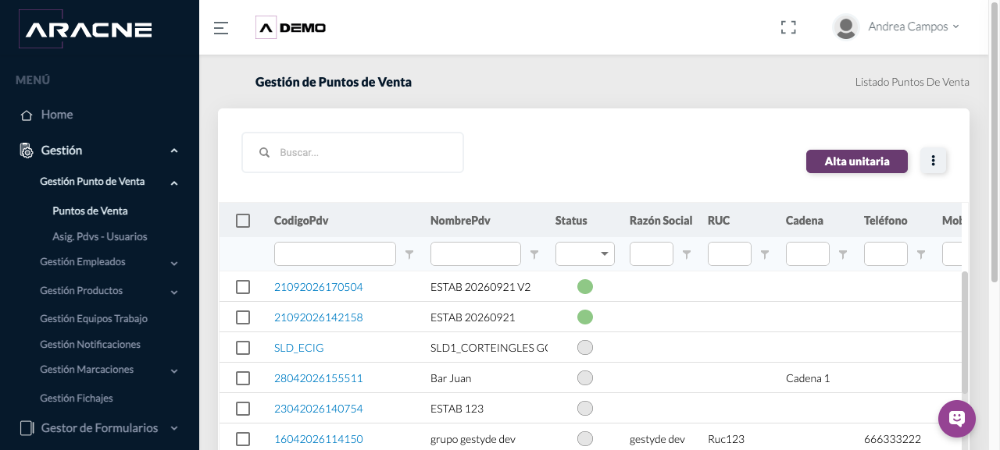
Paso 1. Listado completo con filtros y acciones superiores.
Selecciona el código del PDV para abrir su ficha. Revisa o modifica las pestañas Identificación y Registro, Ubicación y contacto, Perfil de negocio y Clasificación comercial.
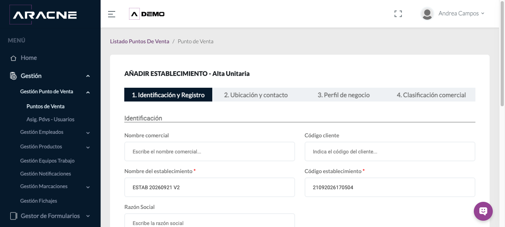
Paso 2. Ficha abierta desde el código del establecimiento.
Alta unitaria
Pulsa Alta unitaria sobre el listado.
Paso 1. Botón Alta unitaria del módulo.
En Identificación y Registro, completa como mínimo los campos señalados con asterisco: nombre y código del establecimiento.
Paso 2. Primera pestaña del alta unitaria.
En Ubicación y contacto, registra dirección, código postal, provincia, población, región o zona y coordenadas cuando correspondan.
Paso 3. Segunda pestaña del alta unitaria.
Completa Perfil de negocio y Clasificación comercial con los valores disponibles para la campaña.
Paso 4. Tercera pestaña del alta unitaria.
Paso 4. Cuarta pestaña del alta unitaria.
Si el establecimiento necesita objetivos, abre Clasificación comercial, pulsa Añadir objetivo y completa tipo, valor, duración y descripción.
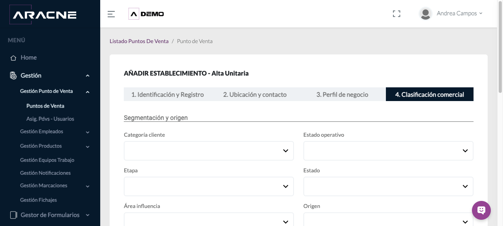
Paso 5. Campos para añadir un objetivo al establecimiento.
Revisa la información y pulsa Continuar. Después, localiza el establecimiento por código o nombre en el listado.
Abre el menú de acciones y selecciona Alta masiva establecimientos.
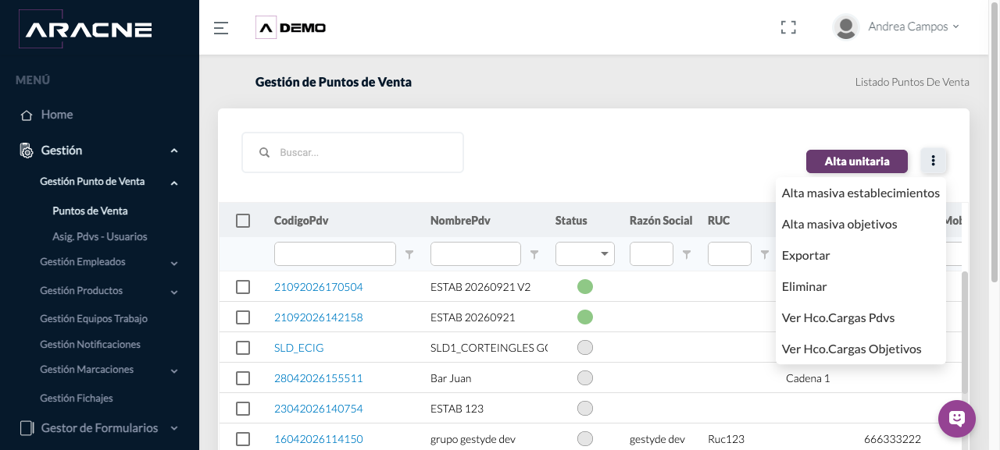
Paso 1. Opción de carga masiva de PDV.
Descarga la plantilla oficial desde el icono Excel de la pantalla.
Paso 2. Pantalla de alta masiva de establecimientos.
Respeta exactamente sus 47 cabeceras, desde nombreComercial hasta productoInteresado4. Los datos territoriales y comerciales deben coincidir con los catálogos disponibles.
Paso 3. Instrucciones visibles de preparación del archivo.
Guarda el archivo como CSV delimitado por comas, elimina las líneas vacías del final y comprueba que no supera 4 MB.
Paso 4. Formato y límite indicados por la herramienta.
Pulsa Subir Archivo y selecciona el CSV.
Paso 5. Control Subir Archivo.
Abre Ver Hco.Cargas Pdvs y comprueba los registros cargados, insertados, actualizados y erróneos, además del resultado y mensaje de validación.
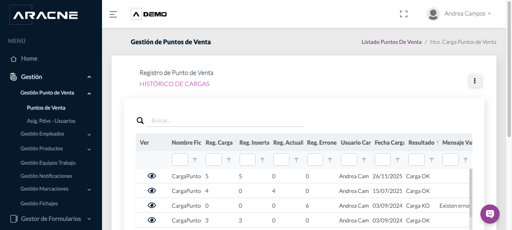
Paso 6. Resultados de las cargas masivas de establecimientos.
Si la carga contiene errores, pulsa el ojo de Ver y corrige los identificadores y valores indicados antes de repetirla.
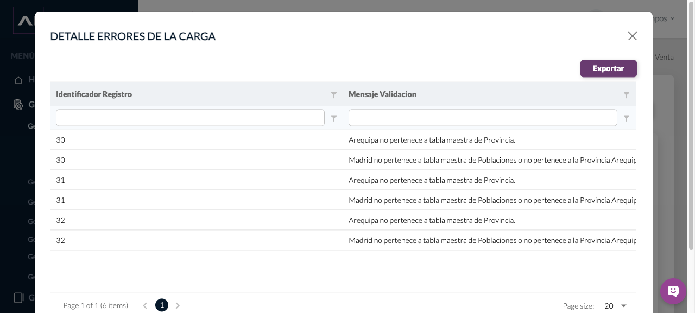
Paso 7. Identificadores rechazados y mensajes de validación.
Abre el menú de acciones y selecciona Alta masiva objetivos.
Paso 1. Opción específica para importar objetivos de PDV.
Descarga la plantilla oficial. Sus columnas son codigoPdv, tipoObjetivo, valorObjetivo, duracionObjetivo y descripcionObjetivo.
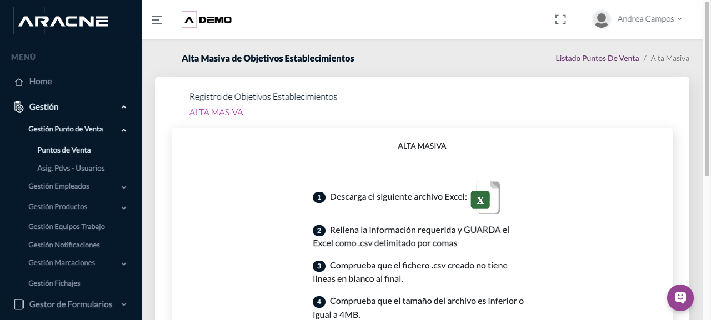
Paso 2. Pantalla de alta masiva de objetivos.
Utiliza códigos de PDV existentes y valores de tipo y duración admitidos por los catálogos de objetivos.
Paso 3. Requisitos previos de la importación.
Guarda como CSV delimitado por comas, sin líneas vacías al final y con un tamaño máximo de 4 MB; después pulsa Subir Archivo.
Paso 4. Instrucciones y control de subida.
Abre Ver Hco.Cargas Objetivos para comprobar el resultado de la importación.
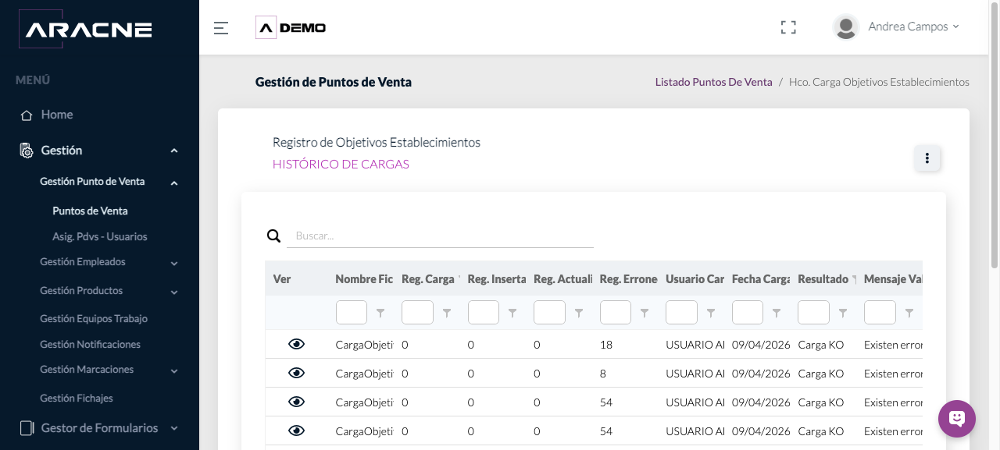
Paso 5. Cargas de objetivos y sus recuentos.
En una carga con errores, pulsa el ojo de Ver. El detalle identifica, entre otros casos, códigos de PDV inexistentes o valores de tipo y duración que no pertenecen a sus tablas maestras.
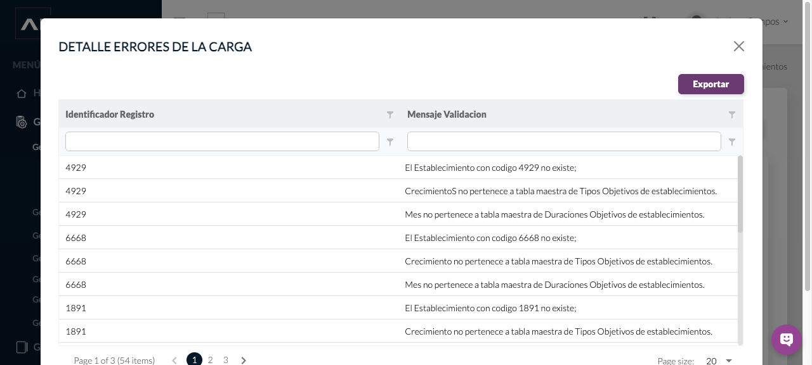
Paso 6. Mensajes de validación de la carga de objetivos.
Menú de acciones
Pulsa el botón de acciones sobre el listado. Contiene Alta masiva establecimientos, Alta masiva objetivos, Exportar, Eliminar, Ver Hco.Cargas Pdvs y Ver Hco.Cargas Objetivos.
Paso 1. Todas las acciones disponibles.
Para descargar el listado, selecciona Exportar. La herramienta genera un archivo Excel con nombre basado en ListadoPuntosDeVenta y la fecha y hora de descarga.
Paso 2. Opción Exportar del menú.
Para retirar establecimientos, marca sus filas, selecciona Eliminar y revisa la confirmación antes de continuar.
Paso 3. Opción Eliminar del menú de acciones.
Selecciona Ver Hco.Cargas Pdvs para revisar las importaciones de establecimientos.
Paso 4. Histórico de cargas de PDV.
Selecciona Ver Hco.Cargas Objetivos para revisar las importaciones de objetivos.
Paso 5. Histórico de cargas de objetivos de PDV.
Campos y controles principales
Nombre y Código establecimiento: identifican el PDV.
Provincia, Población, Latitud, Longitud y Distancia: sitúan el establecimiento.
Tipo de negocio, Canal PDV, Cadena y Sector Industria: describen su perfil comercial.
Categoría cliente, Estado operativo, Etapa, Estado, Área de influencia y Origen: clasifican el seguimiento.
Tipo, valor, duración y descripción del objetivo: definen un objetivo asociado al PDV.
Resultado esperado y comprobación
El establecimiento queda disponible para asignación a usuarios, rutas y Formularios Avanzados. Los objetivos quedan asociados al código del PDV.
Filtra por código o nombre. En una carga masiva, revisa siempre el histórico correspondiente y abre el detalle de cualquier carga con resultado KO.
Problemas habituales
Si no aparece Continuar, completa los campos con asterisco.
Si el archivo no se admite, comprueba CSV delimitado por comas, ausencia de líneas vacías al final y límite de 4 MB.
Si falla una ubicación, utiliza provincia y población existentes y relacionadas entre sí.
Si falla un objetivo, comprueba que el código del PDV existe y que tipo y duración pertenecen a los catálogos disponibles.
Relacionar uno o varios usuarios con los establecimientos en los que deben trabajar, individualmente o mediante una carga masiva.
Requisitos
El empleado y el Punto de Venta deben existir en la campaña. Para una carga masiva, utiliza la plantilla oficial y prepara un CSV delimitado por comas, sin líneas vacías al final y de hasta 4 MB.
Dónde está
Gestión › Gestión Punto de Venta › Asig. Pdvs - Usuarios.
Consultar las asignaciones
Abre el módulo y utiliza los filtros para buscar por nombre del empleado, usuario, rol, código o nombre del PDV, usuario de creación o fecha.
Paso 1. Listado con filtros por empleado, usuario, rol, PDV y creación.
Crear una asignación
Pulsa Crear asignación sobre el listado.
Paso 1. Botón Crear asignación situado sobre el listado.
Abre Seleccione usuarios y busca o selecciona la persona que recibirá los establecimientos.
Paso 2. Lista desplegable de usuarios disponibles para la asignación.
Localiza los establecimientos con el buscador general o con los filtros de Nombre PDV, Código PDV, Regional, Cadena, Tipo PDV, División Territorial, Ciudad y Código Postal.
Paso 3. Formulario con buscador y filtros del listado de PDV.
Marca la casilla de cada establecimiento que corresponda al usuario seleccionado.
Paso 4. Casillas de selección disponibles en cada fila del listado.
Revisa la selección y pulsa Crear Asignación.
Paso 5. Control que completa la relación seleccionada.
Regresa al listado y filtra por usuario o código de PDV para comprobar que aparece una fila por cada relación creada.
Paso 6. Listado donde se consultan las relaciones usuario–PDV.
Abre el menú de acciones y selecciona Alta masiva.
Paso 1. Menú completo con la opción Alta masiva.
Descarga la plantilla oficial desde el icono Excel.
Paso 2. Pantalla de alta masiva con el icono de descarga.
Completa las columnas codigoPdv y usuario. Utiliza códigos de establecimientos y usuarios existentes en la campaña.
Paso 3. Instrucciones mostradas antes de preparar el archivo.
Guarda la información como CSV delimitado por comas, elimina cualquier línea vacía del final y comprueba que el archivo no supera 4 MB. La carga no distingue mayúsculas de minúsculas.
Paso 4. Formato, tamaño y tratamiento de mayúsculas indicados por la herramienta.
Pulsa Subir Archivo y selecciona el CSV preparado.
Paso 5. Control Subir Archivo al final de las instrucciones.
Abre Ver Hco.Cargas y revisa los registros cargados, insertados, actualizados y erróneos, además del resultado y el mensaje de validación.
Paso 6. Recuentos y resultado de cada carga masiva.
En una carga con resultado Carga KO, pulsa el icono del ojo en la columna Ver. Corrige el identificador y el mensaje indicados antes de repetir la carga.
Paso 7. Detalle con el identificador del registro y su mensaje de validación.
Menú de acciones
Pulsa el botón de tres puntos. El menú contiene Eliminar, Alta masiva, Ver Hco.Cargas y Exportar.
Paso 1. Todas las acciones disponibles en el listado.
Para exportar el listado, selecciona Exportar. Se descarga un Excel cuyo nombre comienza por ListadoAsignacionesPuntosDeVentaUsuarios e incorpora la fecha y hora.
Paso 2. Opción Exportar dentro del menú principal.
Comprueba que el Excel contiene Nombre Empleado, Usuario, Rol, Código Pdv, Nombre Pdv, Usuario Creación y Fecha Creación.
Paso 3. Columnas visibles que también componen la exportación.
Para retirar relaciones, marca las filas y selecciona Eliminar. Si no seleccionas ninguna, la herramienta avisa de que es necesario elegir al menos una asignación.
Paso 4. Opción Eliminar y casillas de selección del listado.
En CONFIRMAR ELIMINACIÓN, revisa el número de asignaciones. Pulsa Confirmar solo si deseas retirarlas; utiliza la X o Cancelar para conservarlas.
Paso 5. Diálogo con el número de relaciones seleccionadas antes de eliminarlas.
Histórico y exportaciones de carga
Selecciona Ver Hco.Cargas en el menú principal.
Paso 1. Opción Ver Hco.Cargas del menú principal.
Consulta Nombre Fichero, registros de carga, insertados, actualizados y erróneos, usuario y fecha de carga, resultado y mensaje de validación.
Paso 2. Información disponible para comprobar cada importación.
Abre el menú de tres puntos del histórico y pulsa Exportar. Se descarga HcoCargaPuntosDeVentaUsuarios.xlsx con las mismas columnas del listado.
Paso 3. Menú del histórico con la acción Exportar.
Para una carga KO, abre el ojo de Ver. En el detalle, Exportar genera HcoDetalleCargaAsignacionPdvUsuario.xlsx con Identificador Registro y Mensaje Validación.
Paso 4. Detalle de errores con su propia acción Exportar.
Campos y controles principales
Nombre Empleado y Usuario: identifican a la persona asignada.
Rol: función del usuario en la campaña.
Código Pdv y Nombre Pdv: identifican el establecimiento asociado.
Usuario y Fecha Creación: muestran quién creó la relación y cuándo.
Reg. Carga, Insertados, Actualizados y Erróneos: resumen el resultado de una importación.
Resultado esperado y comprobación
Cada relación válida queda disponible como una fila del listado y puede consultarse por usuario o establecimiento.
En una carga masiva, comprueba que el histórico muestre Carga OK y revisa los recuentos. Si aparece Carga KO, abre el detalle antes de corregir y repetir el archivo.
Problemas habituales
Si el empleado no aparece en el selector, comprueba que exista y esté disponible en la campaña.
Si el PDV no aparece, revisa su alta y utiliza los filtros por código o nombre.
Si al eliminar aparece «Es necesario seleccionar al menos una asignación», marca primero una o varias filas.
Si el detalle indica que el PV o el usuario no existe, corrige codigoPdv o usuario en el CSV.
Si el archivo no se admite, comprueba el formato CSV delimitado por comas, las líneas vacías finales y el límite de 4 MB.
Dar de alta y mantener empleados, administrar sus cuentas, objetivos y documentos, y registrar ausencias individuales o masivas.
Requisitos
Permiso de gestión de empleados. Para una carga masiva, preparar el archivo con la plantilla oficial y guardarlo como CSV delimitado por comas, sin líneas en blanco al final y con un tamaño máximo de 4 MB.
Dónde está
Gestión › Gestión Empleados › Empleados o Absentismos.
Consultar y editar empleados
Abre Empleados y utiliza los filtros de las columnas para localizar el perfil. El listado muestra, entre otros datos, estado, usuario, correo, rol, superior, zona horaria, idioma y categoría.
Paso 1. Listado de empleados y filtros disponibles.
Selecciona el nombre del empleado para abrir su ficha. Revisa sus datos antes de modificar cualquier valor.
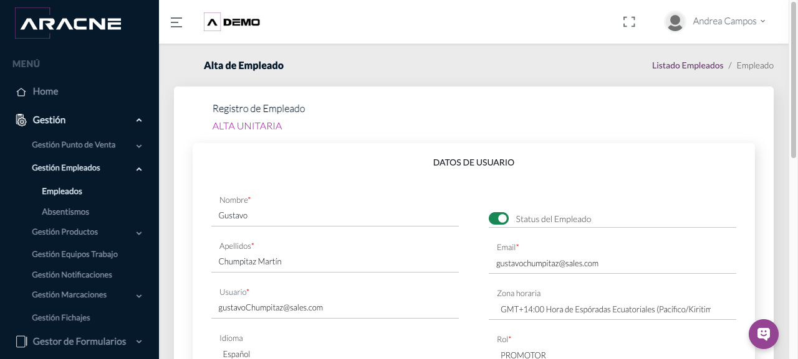
Paso 2. Ficha del empleado abierta desde su nombre en el listado.
Utiliza las pestañas Datos de usuario, Datos de empleado, Documentación adjunta y Gestión de Cuentas para acceder al bloque que necesitas.
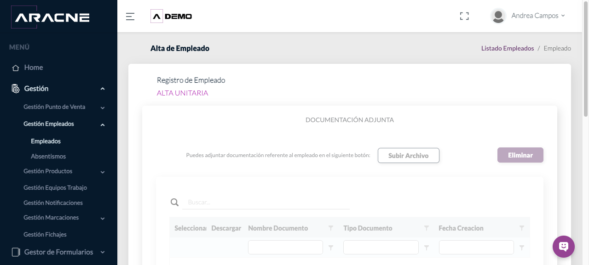
Paso 3. Pestaña para subir y consultar documentos asociados al empleado.
Alta unitaria de empleados
En el listado, pulsa Alta unitaria.
Paso 1. Botón Alta unitaria situado sobre el listado.
Completa Datos de usuario: nombre, apellidos, usuario, contraseña, idioma, categoría, estado, correo, zona horaria, rol y superior.
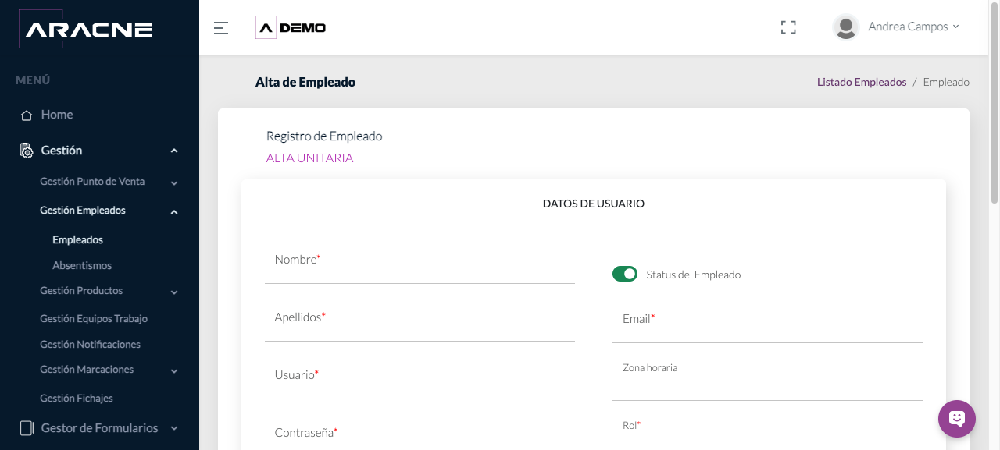
Paso 2. Primera pestaña del alta unitaria.
Abre Datos de empleado y completa los datos personales y de localización que correspondan.
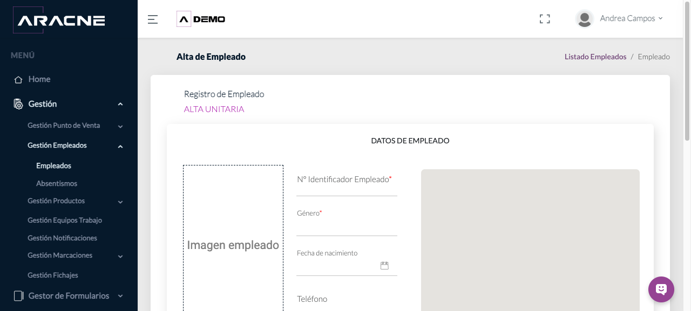
Paso 3. Segunda pestaña del alta unitaria.
Si el perfil necesita objetivos, pulsa Añadir objetivo y completa tipo, valor, duración y descripción.
Paso 4. Campos disponibles para registrar un objetivo.
En Gestión de Cuentas, revisa las cuentas o campañas que correspondan al empleado antes de finalizar el alta.
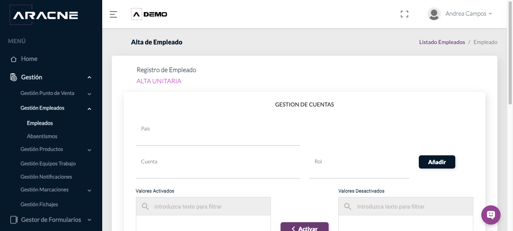
Paso 5. Pestaña Gestión de Cuentas del alta unitaria.
Paso 1. Botón Alta masiva situado sobre el listado.
Descarga la plantilla Excel desde el icono mostrado en el paso 1 de la pantalla. Sus columnas son: nombre, apellidos, usuario, email, rol, superior, zonaHoraria, idioma, categoria, documentoIdentificador, genero, fechaNacimiento, telefono, provincia, poblacion, direccion, ciudad, codigoPostal, latitud y longitud.
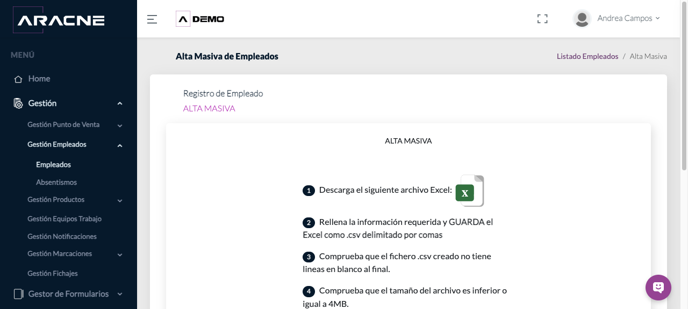
Paso 2. Instrucciones y descarga de la plantilla oficial.
Rellena la plantilla y guárdala como CSV delimitado por comas. Elimina las líneas en blanco del final y comprueba que no supera 4 MB.
Paso 3. Requisitos visibles para preparar el archivo.
Pulsa Subir Archivo y selecciona el CSV preparado.
Paso 4. Control Subir Archivo de la carga masiva.
Desde el menú de acciones, abre Ver Hco.Cargas y comprueba registros cargados, insertados, actualizados, erróneos, resultado y mensaje de validación.
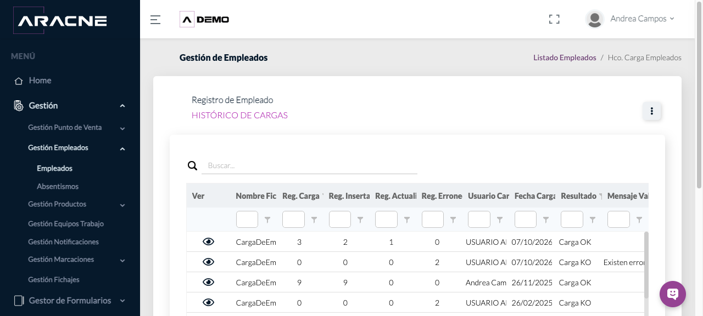
Paso 5. Resultados de las cargas masivas realizadas.
Cuando una carga tenga errores, pulsa el icono del ojo de la columna Ver. Revisa el identificador del registro y el mensaje de validación; el detalle también dispone de Exportar.
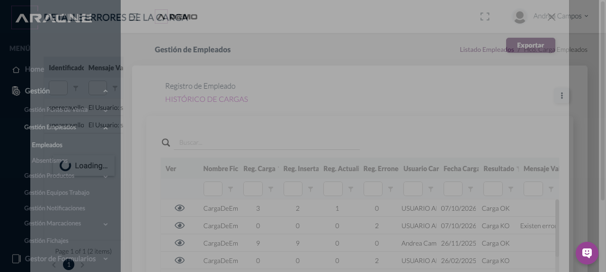
Paso 6. Registros rechazados y mensaje de validación.
Menú de acciones de Empleados
Pulsa el botón de acciones situado sobre el listado. El menú contiene Exportar, Inhabilitar, Habilitar, Resetear Password y Ver Hco.Cargas.
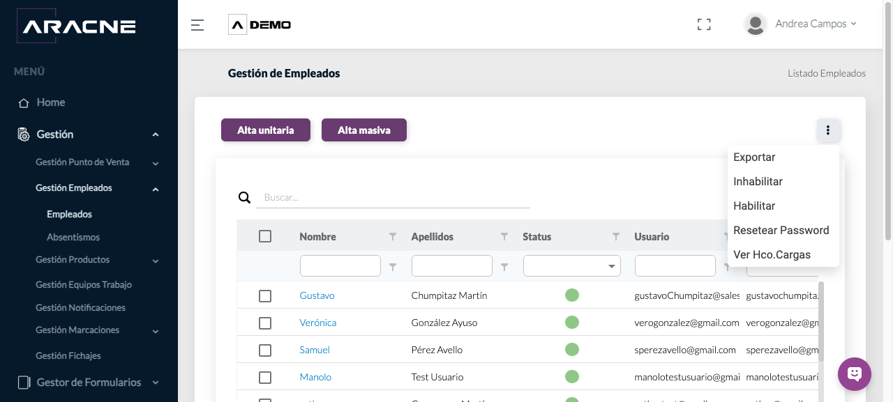
Paso 1. Todas las acciones disponibles en el menú.
Para obtener el listado, elige Exportar. La descarga generada se denomina ListadoEmpleados.xls.
Paso 2. Opción Exportar dentro del menú de acciones.
Para cambiar la disponibilidad de perfiles, marca las filas correspondientes y utiliza Inhabilitar o Habilitar. Después, comprueba el valor de Status en el listado.
Paso 3. Opciones de estado disponibles en el menú.
Para iniciar el restablecimiento de acceso de los perfiles seleccionados, marca sus filas y pulsa Resetear Password. Revisa la confirmación que muestra la herramienta antes de continuar.
Paso 4. Opción Resetear Password del menú de acciones.
Para revisar importaciones anteriores, pulsa Ver Hco.Cargas.
Paso 5. Histórico con resultado y recuentos de cada importación.
Documentos del empleado
Abre un empleado existente y entra en Documentación adjunta. Pulsa Subir Archivo para asociar documentación; la tabla permite consultar el nombre, tipo y fecha de creación, y descargar los documentos existentes.
Paso 1. Zona de subida y listado de documentos.
Absentismos
Abre Absentismos. El listado permite revisar empleado, tipo, fechas, sustitución, observaciones, documento y datos de creación. Si Documento indica “SI”, utiliza la columna Descargar.
Paso 1. Consulta de ausencias y documentos asociados.
Para registrar una ausencia individual, pulsa Nuevo absentismo y completa empleado, tipo, fecha de inicio, fecha de fin, empleado sustituto, observaciones y archivo adjunto cuando corresponda.
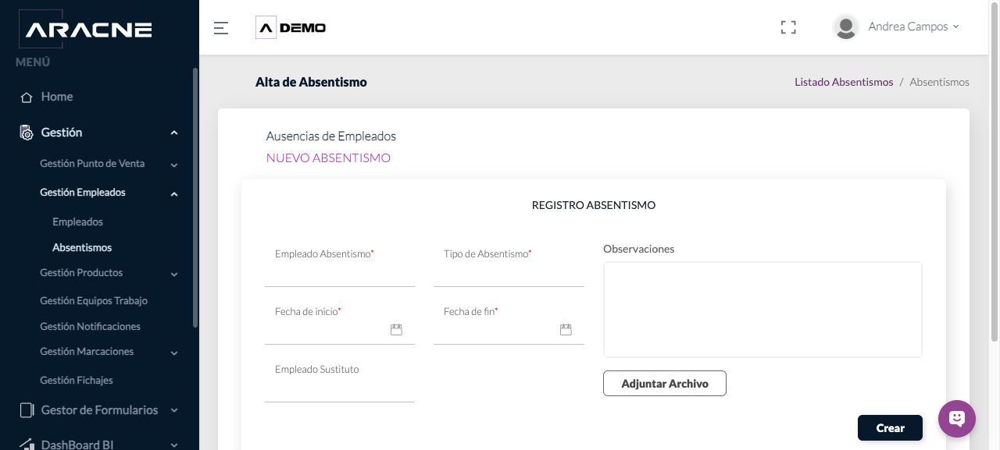
Paso 2. Formulario de alta individual de una ausencia.
Para una carga masiva, pulsa Alta masiva, descarga la plantilla oficial, guárdala como CSV delimitado por comas, comprueba que no contiene líneas vacías al final ni supera 4 MB y pulsa Subir Archivo.
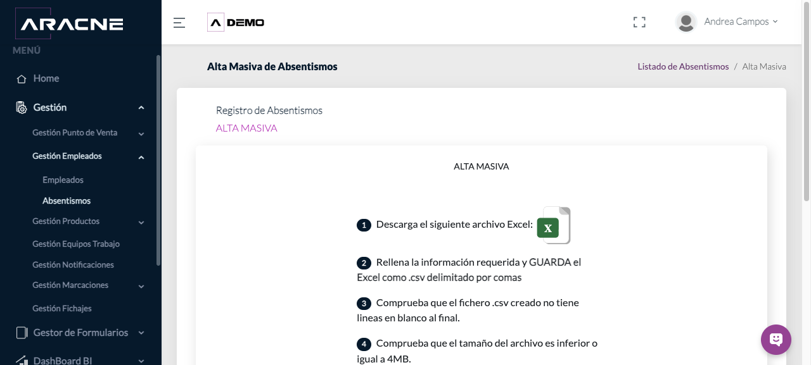
Paso 3. Instrucciones y plantilla de carga masiva.
Abre el menú de acciones. Exportar descarga Informe de Absentismos.xls y Ver Hco.Cargas abre el historial de importaciones.
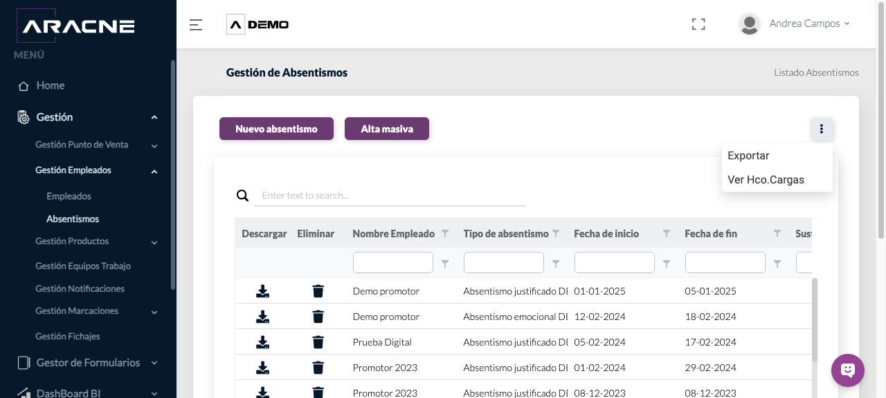
Paso 4. Opciones Exportar y Ver Hco.Cargas.
En el histórico, revisa registros cargados, insertados, actualizados, erróneos, usuario, fecha, resultado y mensaje de validación. Si todavía no se han realizado cargas, la tabla muestra “No data to display”.
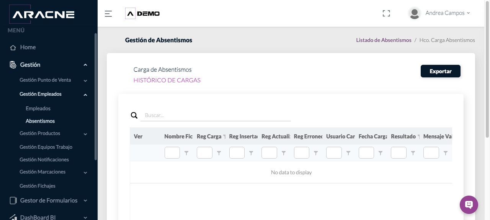
Paso 5. Pantalla de histórico de importaciones.
Para retirar una ausencia, utiliza la acción de la columna Eliminar de la fila correspondiente y revisa la confirmación antes de continuar.
Paso 6. Columna Eliminar disponible en el listado.
Campos y controles principales
Status: disponibilidad del perfil.
Rol y Superior: función y jerarquía operativa.
Zona horaria e Idioma: configuración temporal y de presentación.
Tipo de absentismo, fechas, sustitución y observaciones: datos que describen la ausencia.
Reg. Carga, Insertados, Actualizados y Erróneos: recuentos del resultado de una importación.
Resultado esperado y comprobación
El empleado queda localizable con el estado, rol, superior, cuentas y datos necesarios; las ausencias quedan registradas en su listado. En una importación, el histórico muestra el resultado y los recuentos procesados.
Busca el empleado o la ausencia en el listado. En cargas masivas, abre el histórico y comprueba el resultado y los errores antes de considerar finalizado el proceso.
Problemas habituales
Si el archivo no se admite, comprueba que sea CSV delimitado por comas, no tenga líneas en blanco al final y no supere 4 MB.
Si una carga contiene errores, abre el detalle desde el icono del ojo y corrige los registros identificados antes de repetirla.
Si un empleado no aparece en un selector, comprueba su estado, rol y cuenta asignada.
Si las fechas no coinciden, revisa la zona horaria y el intervalo registrado.
Crear y mantener la jerarquía comercial de SuperCategorías, Categorías, Marcas, Líneas de Producto y Productos utilizada por la campaña.
Requisitos
Define la jerarquía en este orden: SuperCategoría, Categoría, Marca, Línea de Producto y Producto. Las Líneas y los Productos dependen de elementos previamente existentes.
Dónde está
Gestión › Gestión Productos.
Importante
En este catálogo, la acción de interfaz Eliminar desactiva el registro seleccionado; no lo borra físicamente.
Consultar la jerarquía del catálogo
Abre SuperCategorías para consultar el primer nivel del catálogo y su estado.
Paso 1. Listado de SuperCategorías con buscador, estado y acceso al detalle.
Entra en Categorías para consultar el nombre, estado y SuperCategoría asociada.
Paso 2. Categorías relacionadas con su SuperCategoría.
Abre Marcas para revisar las marcas disponibles y su estado.
Paso 3. Listado de marcas del catálogo.
Consulta Línea de Productos. Cada línea muestra SuperCategoría, Categoría, Marca y Origen.
Paso 4. Relaciones jerárquicas y origen de las líneas de producto.
Entra en Productos para consultar imagen, nombre, estado, códigos, línea, jerarquía, origen, PVP y etiquetas.
Paso 5. Columnas disponibles en el nivel Producto.
SuperCategorías
Pulsa Nueva supercategoría desde el listado.
Paso 1. Botón Nueva supercategoría situado sobre el listado.
Introduce el nombre, revisa Status de la Supercategoría y pulsa Crear.
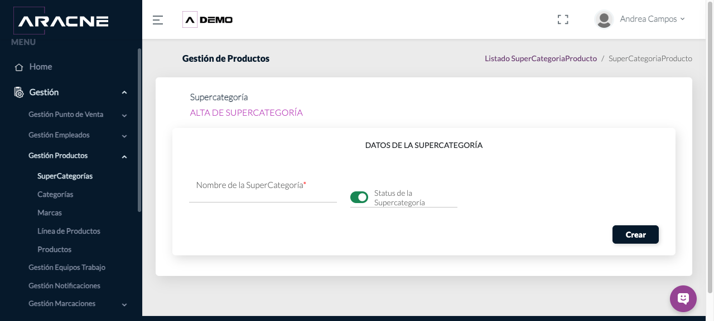
Paso 2. Formulario con nombre, estado y botón Crear.
Para editar, abre el nombre del registro, modifica el nombre o el estado y pulsa Actualizar.
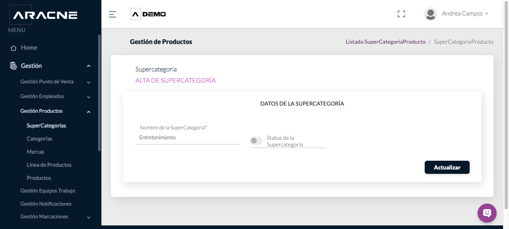
Paso 3. Formulario existente con el botón Actualizar.
Abre el menú de tres puntos. Contiene Exportar y Eliminar.
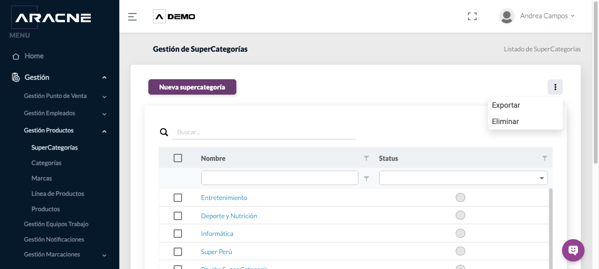
Paso 4. Acciones Exportar y Eliminar.
Exportar descarga Informe de Supercategorias.xls. Para desactivar registros, selecciónalos y usa la acción de interfaz Eliminar.
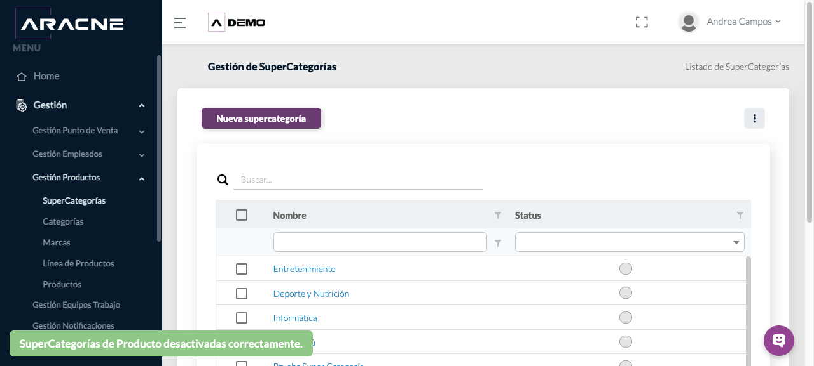
Paso 5. Listado con el resultado de la desactivación.
Categorías
Pulsa Nueva categoría.
Paso 1. Botón Nueva categoría sobre el listado.
Introduce el nombre, revisa el estado y selecciona la SuperCategoría a la que pertenece.
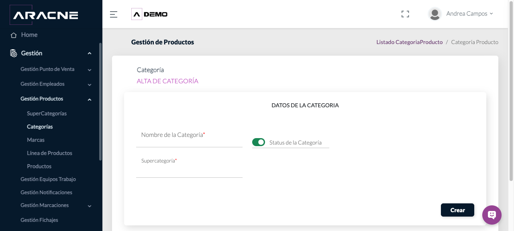
Paso 2. Formulario de alta con nombre, estado y SuperCategoría.
Abre el selector de SuperCategoría y elige un elemento disponible antes de crear la Categoría.
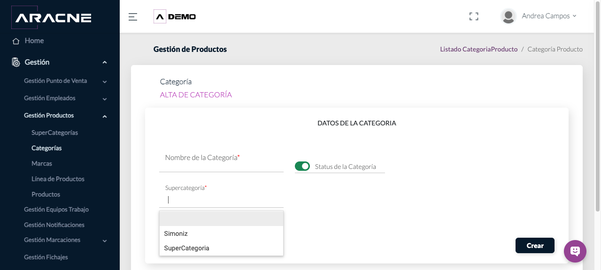
Paso 3. Opciones disponibles para relacionar la Categoría.
El menú de tres puntos contiene Exportar y Eliminar. Exportar descarga Informe de Categorías.xls; Eliminar desactiva las filas seleccionadas.
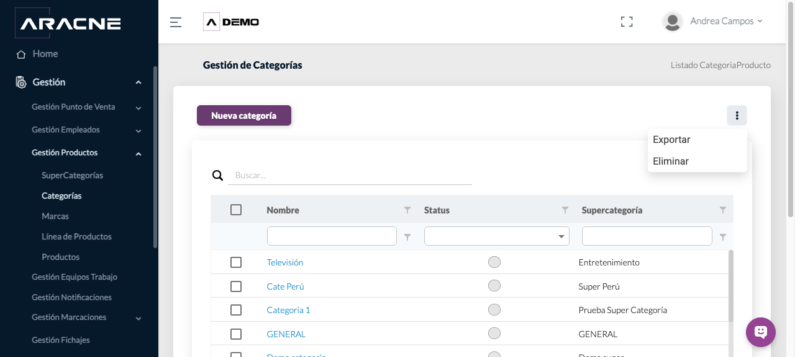
Paso 4. Acciones disponibles en Categorías.
Comprueba el resultado en el listado y, si procede, filtra por nombre para revisar el estado del registro.
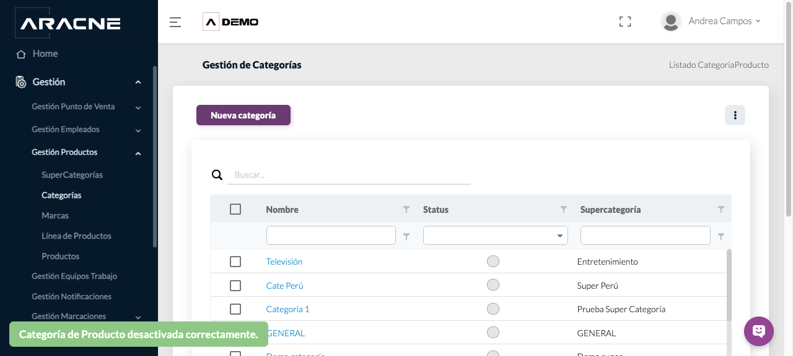
Paso 5. Listado después de aplicar la acción de desactivación.
Marcas
Pulsa Nueva marca desde el listado.
Paso 1. Botón Nueva marca y listado existente.
Indica el nombre, revisa Status de la Marca y pulsa Crear.
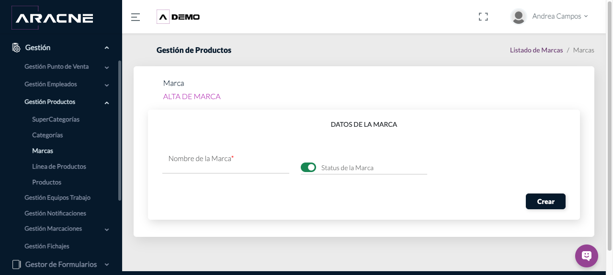
Paso 2. Formulario de creación de marca.
Abre el menú de tres puntos. Exportar descarga Informe de Marcas.xls y Eliminar desactiva las marcas seleccionadas.
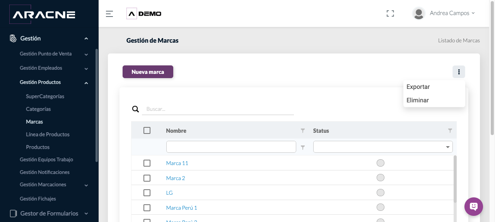
Paso 3. Acciones Exportar y Eliminar.
Después de desactivar, comprueba el mensaje de resultado y el estado del registro en el listado.
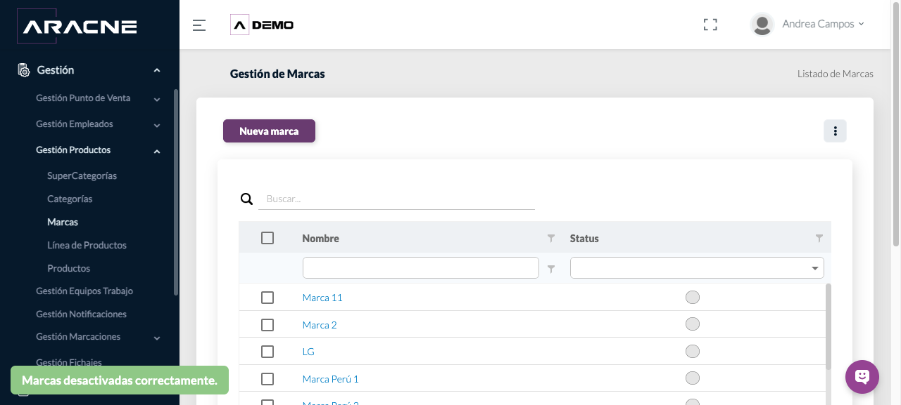
Paso 4. Mensaje mostrado tras desactivar una marca.
Líneas de Producto
Pulsa Nueva linea producto para abrir el alta unitaria.
Paso 1. Listado con el botón Nueva linea producto.
Completa nombre, estado, Marca, Super Categoría, Categoría y Origen. Pulsa Crear cuando la relación sea correcta.
Paso 3. Instrucciones y descarga de la plantilla oficial.
Completa nombreLineaProducto, superCategoria, categoria, marca y origen. Guarda como CSV delimitado por comas, sin líneas vacías al final y de hasta 4 MB. La comparación no distingue mayúsculas de minúsculas.
Paso 4. Requisitos del archivo mostrados por la herramienta.
Pulsa Subir Archivo. Después abre Ver Hco.Cargas desde el menú principal.
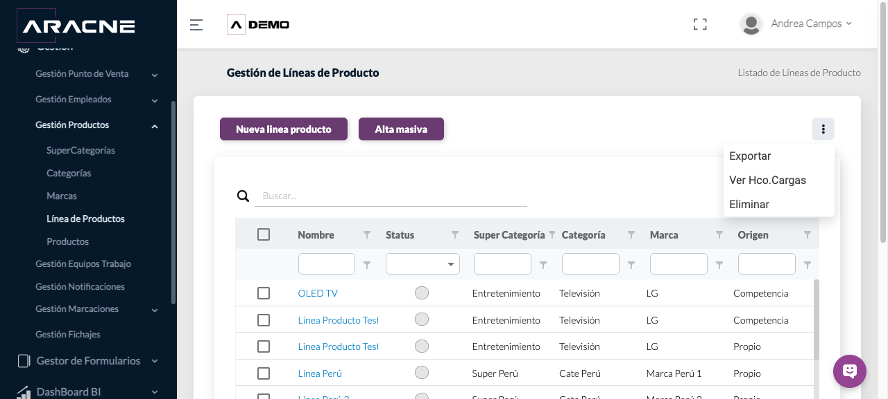
Paso 5. Alta masiva, Exportar, Ver Hco.Cargas y Eliminar.
Revisa fichero, registros de carga, insertados, actualizados y erróneos, usuario, fecha, resultado y mensaje. Exportar descarga HcoCargaLineaProductos.xlsx.
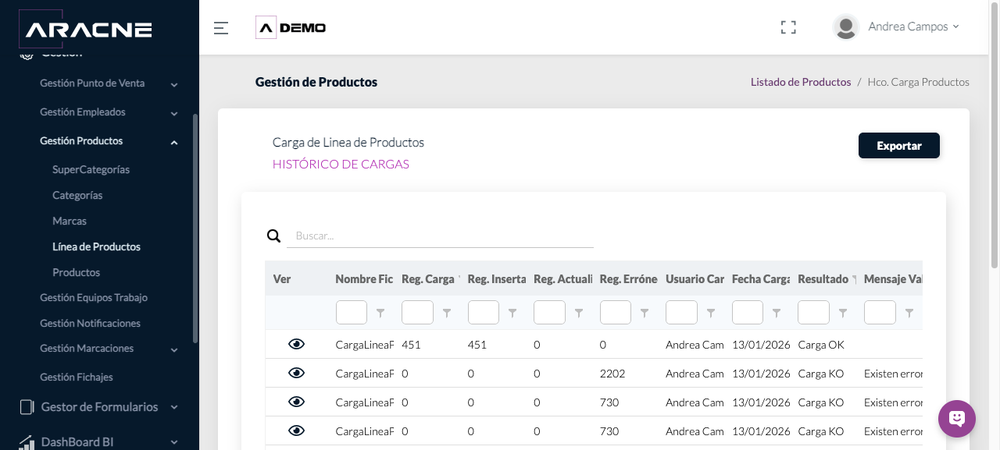
Paso 6. Resultados de cargas correctas y con errores.
En una Carga KO, abre el icono de Ver y corrige cada mensaje antes de repetir el archivo.
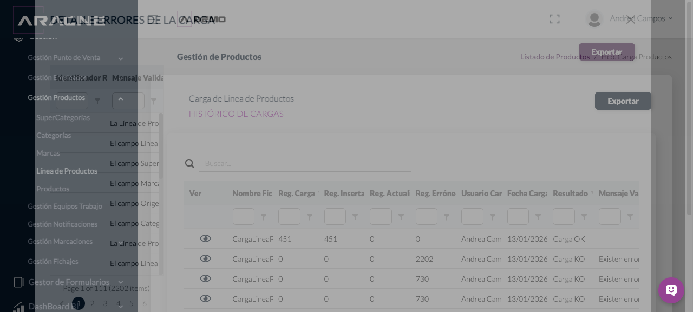
Paso 7. Detalle de validaciones de una carga masiva.
En el listado, Exportar descarga Informe de Lineas.xls. La acción Eliminar desactiva las líneas seleccionadas.
Paso 8. Menú completo del listado.
Productos
Pulsa Nuevo producto para iniciar un alta unitaria.
Paso 1. Listado con el botón Nuevo producto.
Añade la imagen cuando corresponda y completa nombre, estado, código de barras, código del fabricante, Línea de Producto, PVP y etiquetas. Pulsa Crear.
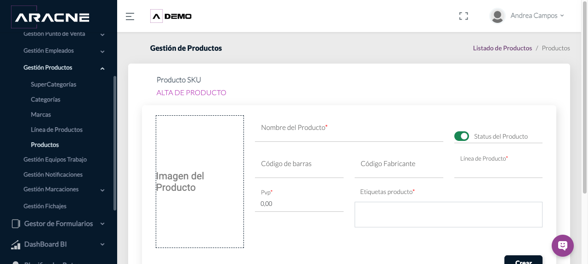
Paso 2. Campos disponibles en la ficha de Producto.
Completa nombreProducto, codigoBarras, codigoFabricante, lineaProducto, pvp, etiquetas, superCategoria, categoria, marca y origen. Guarda un CSV delimitado por comas, sin líneas vacías al final y de hasta 4 MB.
Paso 4. Condiciones de la carga masiva.
Pulsa Subir Archivo y, después, abre Ver Hco.Cargas.
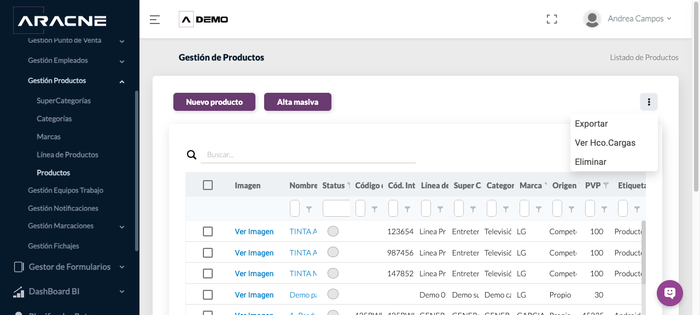
Paso 5. Alta masiva, Exportar, Ver Hco.Cargas y Eliminar.
Consulta el resultado y el mensaje de validación de cada archivo. Entre los controles se comprueba que la Línea de Producto exista y que no haya productos repetidos en el archivo.
Paso 6. Cargas correctas y mensajes de validación del histórico.
El icono Ver abre el detalle cuando la carga dispone de errores consultables. Si no existen, la herramienta lo indica.
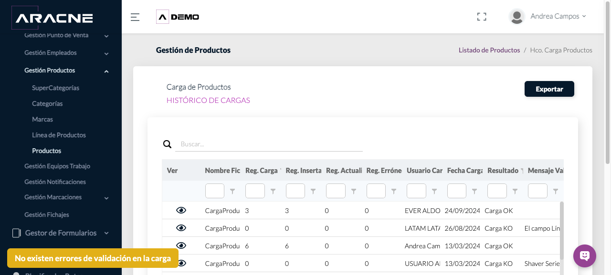
Paso 7. Resultado al solicitar el detalle de la carga.
Exportar descarga el informe de productos en formato XLS; la exportación del histórico descarga HcoCargaProductos.xlsx. Eliminar desactiva los Productos seleccionados.
Paso 8. Menú completo para exportar, consultar cargas o desactivar.
Campos y controles principales
Status: determina si el elemento está disponible en el catálogo.
SuperCategoría y Categoría: niveles superiores de clasificación.
Marca: fabricante o marca comercial relacionada.
Origen: valor Propio o Competencia mostrado en las Líneas.
Código de barras y Código Fabricante: identificadores del Producto.
PVP: precio consignado en la ficha.
Etiquetas producto: clasificaciones adicionales del Producto.
Resultado esperado y comprobación
La jerarquía queda disponible y cada Línea o Producto conserva las relaciones mostradas en su listado.
Busca el elemento por nombre y revisa su estado y sus relaciones. En una carga masiva, confirma Carga OK, los recuentos y el mensaje de validación; corrige cualquier Carga KO antes de repetirla.
Problemas habituales
Si una SuperCategoría no aparece al crear una Categoría, comprueba que esté activa.
Si una Línea no puede clasificarse, revisa que existan la SuperCategoría, Categoría y Marca.
Si el histórico indica que una Línea no existe, corrige lineaProducto o crea previamente la Línea correspondiente.
Si detecta un Producto repetido, elimina la duplicidad del CSV antes de volver a cargarlo.
Si el archivo no se admite, comprueba el formato CSV, las líneas vacías finales y el límite de 4 MB.
Recuerda que la acción Eliminar de este catálogo desactiva; no borra físicamente.
Agrupar comerciales bajo un supervisor para consultar y mantener la composición de cada equipo.
Requisitos
El supervisor y los comerciales deben existir y estar disponibles en la campaña.
Dónde está
Gestión › Gestión Equipos Trabajo.
Importante
La acción Eliminar retira inmediatamente el equipo seleccionado. No muestra una confirmación adicional.
Consultar equipos
Abre el módulo. El listado muestra Nombre Equipo Trabajo, Supervisor, Status, Nº Comerciales, Usuario Creación y Fecha Creación. Utiliza el buscador o los filtros de columna para localizar registros.
Paso 1. Listado, buscador y filtros disponibles.
Crear un equipo de trabajo
Pulsa Nuevo equipo de trabajo.
Paso 1. Botón situado sobre el listado.
Introduce un nombre identificable para el equipo.
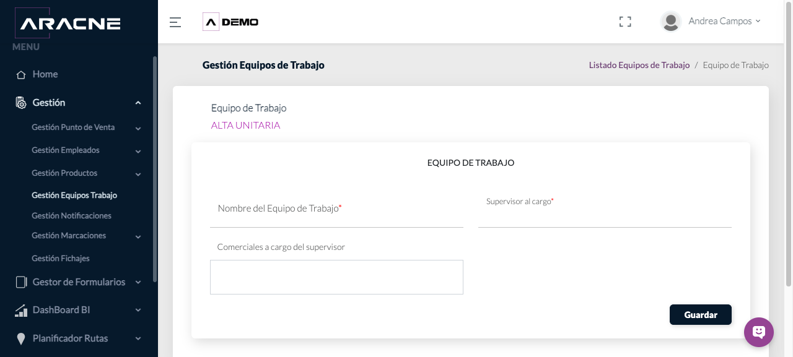
Paso 2. Formulario con nombre, comerciales y supervisor.
Abre Comerciales a cargo del supervisor y selecciona uno o varios usuarios. Cada seleccionado aparece como una etiqueta dentro del campo.
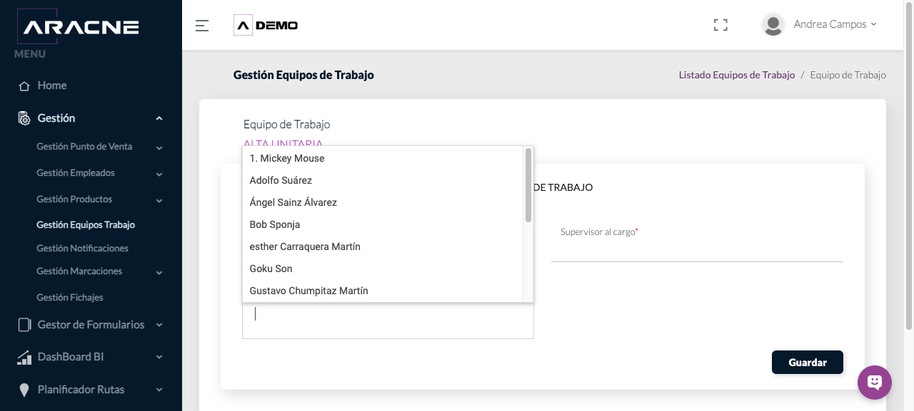
Paso 3. Lista de comerciales disponibles en ESPAÑA - DEMO.
Abre Supervisor al cargo y elige un supervisor disponible.
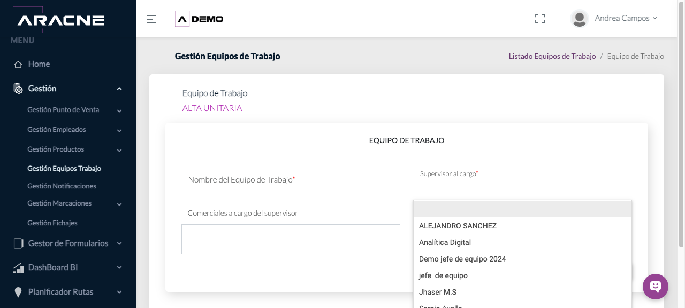
Paso 4. Lista de supervisores disponibles.
Revisa nombre, comerciales y supervisor y pulsa Guardar. Regresa al listado y comprueba el Nº Comerciales.
Paso 5. Botón Guardar del alta unitaria.
Editar un equipo
En el listado, pulsa el nombre del equipo.
Paso 1. Los nombres de equipo abren su ficha.
Modifica el nombre, los comerciales o el supervisor. Para retirar un comercial, utiliza la X de su etiqueta.
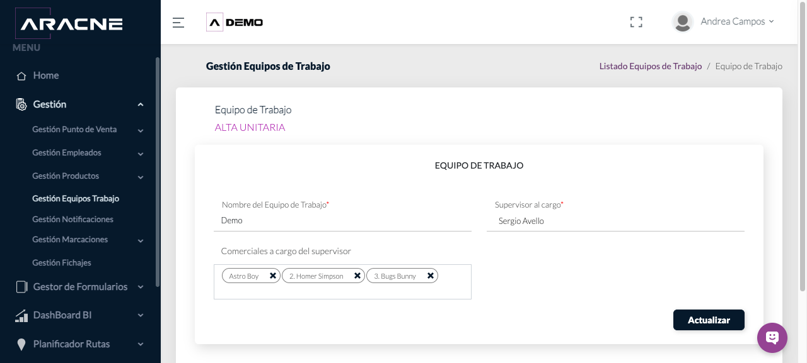
Paso 2. Ficha existente con comerciales y supervisor actuales.
Pulsa Actualizar y comprueba en el listado el supervisor y el Nº Comerciales resultantes.
Paso 3. Botón Actualizar de la ficha existente.
Menú de acciones
Abre el botón de tres puntos. El menú contiene Exportar y Eliminar.
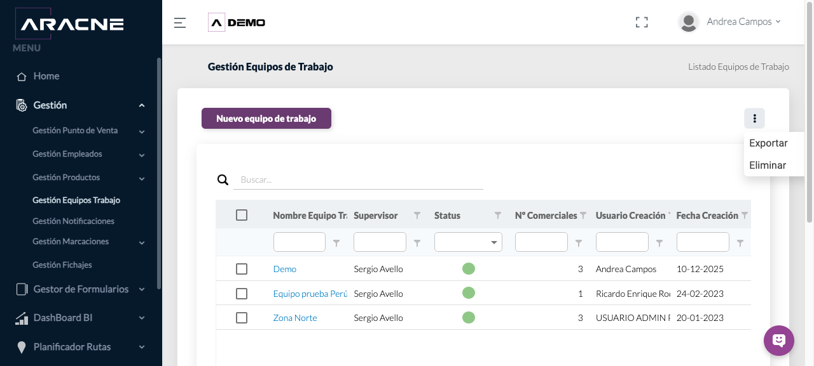
Paso 1. Acciones Exportar y Eliminar.
Selecciona Exportar para descargar ListadoEquiposTrabajo.xls con los datos del listado.
Paso 2. Opción Exportar del menú.
Para eliminar un equipo, marca primero su casilla. Sin selección, la herramienta muestra «Es necesario seleccionar al menos un equipo de trabajo».
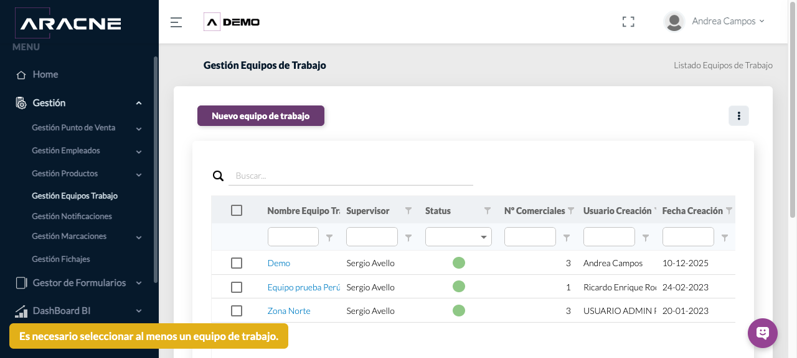
Paso 3. Aviso mostrado cuando no se ha marcado ningún equipo.
Con una fila seleccionada, Eliminar retira el equipo inmediatamente y muestra «Equipos de Trabajo eliminados correctamente». Comprueba cuidadosamente la selección porque no aparece una confirmación adicional.
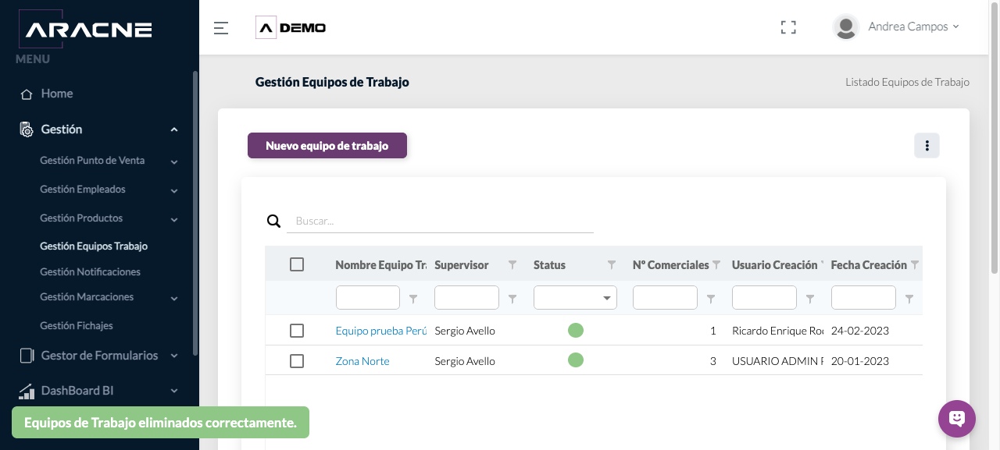
Paso 4. Mensaje de eliminación y listado resultante.
Campos y controles principales
Nombre del Equipo de Trabajo: nombre identificador del grupo.
Comerciales a cargo del supervisor: integrantes asociados al equipo; admite varias selecciones.
Supervisor al cargo: responsable asociado al equipo.
Status: estado mostrado en el listado.
Nº Comerciales: total de integrantes del equipo.
Usuario y Fecha Creación: indican quién creó el equipo y cuándo.
Resultado esperado y comprobación
El equipo aparece en el listado con el supervisor y el número de comerciales seleccionados.
Busca el nombre del equipo y contrasta el supervisor y el Nº Comerciales. Abre la ficha para revisar los integrantes concretos.
Problemas habituales
Si un comercial no aparece, comprueba que su usuario esté disponible en la campaña.
Si falta el supervisor, revisa que exista un usuario habilitado para esa función.
Si el Nº Comerciales no coincide, abre la ficha y revisa las etiquetas seleccionadas.
Si aparece el aviso de selección, marca al menos una fila antes de usar Eliminar.
Utiliza Eliminar con precaución: la acción se ejecuta sin una confirmación adicional.
Preparar y enviar una comunicación a la aplicación móvil dirigida a un rol completo o a usuarios concretos.
Requisitos
Los roles y usuarios destinatarios deben existir en la campaña. Prepara el asunto, el mensaje y, si corresponde, el archivo adjunto.
Dónde está
Gestión › Gestión Notificaciones.
Estado del entorno
El listado de ESPAÑA - DEMO no contiene notificaciones. Por ello, la acción Eliminar aparece deshabilitada y no se ha generado una notificación solo para probarla.
Consultar notificaciones
Abre el módulo. Puedes buscar una notificación o filtrar por título, mensaje, Tipo Notificación, usuario, rol, Adjunto y Fecha Creación.
Paso 1. Listado vacío de ESPAÑA - DEMO con buscador y filtros.
Crear una notificación
Pulsa Nueva notificación.
Paso 1. Botón de creación situado sobre el listado.
En Rol / Usuario, elige el modo de destinatario.
Paso 2. Las dos formas disponibles de dirigir la notificación.
Si seleccionas Rol, aparece un segundo selector obligatorio para elegir el rol destinatario.
Paso 3. Formulario adaptado al envío por rol.
Selecciona el rol que recibirá la notificación. Entre los valores disponibles se muestran ADMINISTRADOR, ANALISTA DE DATOS, ARACNE SPECIALIST, CLIENTE, DIRECTOR DE CUENTA, JEFE DE EQUIPO, MERCHAN y PRODUCT SPECIALIST.
Paso 4. Ejemplo del campo Rol cumplimentado.
Si eliges Usuario, aparece un selector obligatorio que admite usuarios concretos.
Paso 5. Formulario adaptado al envío por usuario.
Abre Usuario y selecciona uno o varios destinatarios disponibles en la campaña.
Paso 6. Lista de usuarios que pueden recibir la notificación.
Introduce un Asunto y redacta el Mensaje. Ambos campos son obligatorios.
Paso 7. Campos obligatorios de contenido.
Si necesitas incluir un documento, pulsa Adjuntar Archivo y selecciona el archivo desde el equipo.
Paso 8. Control opcional de archivo adjunto.
Revisa destinatario, asunto, mensaje y adjunto. Pulsa Enviar únicamente cuando quieras remitir la notificación a la aplicación móvil.
Paso 9. Botón Enviar al final del formulario.
Menú de acciones
Abre el botón de tres puntos. El menú contiene Exportar y Eliminar.
Paso 1. Acciones Exportar y Eliminar; Eliminar aparece deshabilitado sin registros.
Pulsa Exportar para descargar ListadoNotificaciones.xlsx. El archivo contiene título, mensaje, Tipo Notificación, usuario, rol, Adjunto y Fecha Creación.
Paso 2. Opción Exportar del menú principal.
Campos y controles principales
Rol / Usuario: determina si el envío se dirige a un rol o a usuarios concretos.
Rol: rol completo que recibirá la notificación.
Usuario: uno o varios usuarios seleccionados como destinatarios.
Asunto: título de la comunicación; obligatorio.
Mensaje: contenido principal; obligatorio.
Adjuntar Archivo: incorpora un archivo opcional.
Resultado esperado y comprobación
Al enviar, la notificación queda dirigida al rol o a los usuarios seleccionados para su recepción en la aplicación móvil.
Consulta el listado y filtra por asunto, usuario, rol o fecha para localizarla cuando existan registros.
Problemas habituales
Si no aparece un usuario o rol, comprueba que exista en la campaña.
Si no puedes enviar, revisa los campos obligatorios Rol/Usuario, destinatario, Asunto y Mensaje.
Si el listado está vacío, Eliminar permanece deshabilitado.
Si necesitas conservar una copia del listado, utiliza Exportar.
Configurar horarios, generar jornadas, consultar el tiempo fichado y registrar ausencias.
Requisitos
Los empleados deben existir y estar activos. Para generar jornadas debe existir previamente un horario.
Dónde está
Gestión › Gestión Fichajes.
Contenido
El módulo se divide en Horarios, Jornadas, Fichajes y Ausencias. Las cuatro vistas están relacionadas: el horario define la franja, la jornada la aplica a un empleado y fecha, Fichajes muestra el tiempo registrado y Ausencias recoge los periodos no trabajados.
Consultar los apartados del módulo
Abre Gestión de Fichajes. La barra superior permite cambiar entre Horarios, Jornadas, Fichajes y Ausencias.
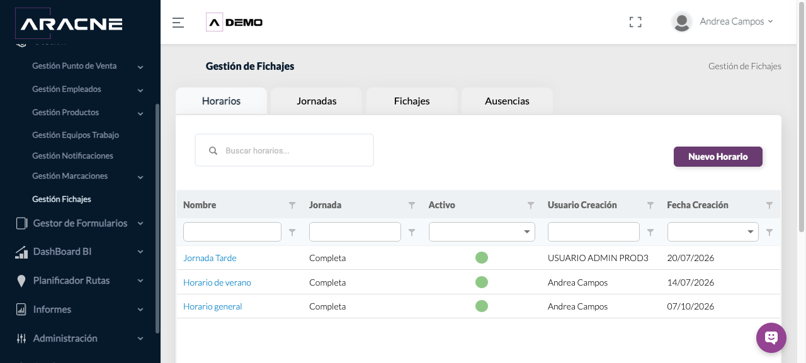
Paso 1. Pestañas del módulo y listado inicial de Horarios.
Crear y consultar horarios
En Horarios, consulta el nombre, tipo de jornada, estado, usuario y fecha de creación de cada configuración.
Paso 1. Horarios disponibles en ESPAÑA - DEMO.
Pulsa Nuevo Horario para abrir la pantalla de configuración.
Paso 2. Formulario de alta sin guardar datos.
Introduce el nombre del horario y selecciona el Tipo de jornada: Completa, Partida o Extra.
Paso 3. Opciones disponibles en el selector Tipo de jornada.
Marca los días laborables. Al seleccionar un día aparece su tramo horario; en una jornada completa el tramo inicial mostrado es 08:00–16:00.
Paso 4. Configuración del lunes con su franja de trabajo.
Ajusta el inicio y fin del tramo. Si existe una pausa, activa Descanso e indica su hora de inicio y fin.
Paso 5. Controles de descanso asociados al día laborable.
Revisa todos los días y pulsa Guardar. Después, comprueba que el horario aparezca en el listado con el nombre y tipo esperados.
Paso 6. Botón Guardar del formulario de Horario.
Crear, consultar y exportar jornadas
Abre Jornadas y utiliza Fecha desde y Fecha hasta para consultar un periodo. El listado muestra empleado, fecha, inicio, descanso, fin, creación, validación, estado, actividad y observaciones.
Paso 1. Consulta de jornadas del periodo seleccionado.
Pulsa Nueva Jornada. Selecciona un Horario, una Fecha Inicio, una Fecha Fin y uno o varios Usuarios.
Paso 2. Campos del formulario de creación de jornadas.
Revisa el intervalo y los usuarios antes de pulsar Guardar. Comprueba después que las jornadas aparezcan en el periodo correspondiente.
Paso 3. Formulario preparado para crear jornadas sin realizar el guardado.
Abre el icono de detalle de una jornada para consultar usuario, fecha, tiempo imputado, descanso, horas de inicio y fin y estado de validación.
Paso 4. Resumen horario y escala diaria de una jornada existente.
Abre el menú de tres puntos. Incluye Exportar, Carga Masiva y Ver Hco. Cargas.
Paso 5. Acciones disponibles para las Jornadas.
Pulsa Exportar para descargar el listado de jornadas del periodo en un archivo Excel.
Paso 6. Opción Exportar dentro del menú.
Cargar jornadas de forma masiva
En el menú de Jornadas, selecciona Carga Masiva.
Paso 1. Opción Carga Masiva del menú de Jornadas.
Descarga la plantilla oficial CargaAsistenciaLaboral.xlsx. Contiene las columnas usuario, fechaInicio, fechaFin y horario.
Paso 2. Acceso a la plantilla oficial de Asistencia Laboral.
Completa la plantilla y guárdala como CSV delimitado por comas. El archivo no debe tener líneas vacías al final y debe pesar 4 MB o menos. Las mayúsculas y minúsculas se tratan como equivalentes.
Paso 3. Indicaciones completas mostradas antes de subir el archivo.
Pulsa Subir Archivo y selecciona el CSV preparado. Después, abre Ver Hco. Cargas para comprobar el resultado.
Paso 4. Control de selección y subida del CSV.
En el histórico, consulta nombre de fichero, registros cargados, insertados, actualizados y erróneos, usuario, fecha, resultado y mensaje de validación. Puedes usar Exportar para descargar el histórico.
Paso 5. Columnas y exportación del histórico de Asistencia Laboral.
Consultar fichajes por fecha
Abre Fichajes y selecciona una fecha. La vista representa el día completo entre las 00:00 y las 23:59.
Paso 1. Vista diaria antes de localizar registros.
Cuando existen datos, cada fila muestra el empleado, el tiempo imputado frente al planificado y su distribución en la escala horaria.
Paso 2. Ejemplo de una fecha con registro disponible.
Crear, consultar y exportar ausencias
Abre Ausencias. Puedes filtrar por empleado y consultar tipo, fechas, sustituto, observaciones, usuario y fecha de creación.
Paso 1. Consulta de ausencias y filtro por empleado.
Pulsa Nueva Ausencia para abrir el formulario.
Paso 2. Formulario de alta de una ausencia.
Selecciona el empleado y el tipo de ausencia. En ESPAÑA - DEMO está disponible Vacaciones.
Paso 3. Selector con el tipo Vacaciones.
Indica Fecha Inicio y Fecha Fin. Si corresponde, selecciona un Usuario Sustituto y añade Observaciones.
Paso 4. Fechas, sustituto y observaciones del formulario.
Revisa los datos y pulsa Guardar. Comprueba después que la ausencia aparezca en el listado del empleado.
Paso 5. Botón Guardar al final del formulario.
Abre el menú de tres puntos y pulsa Exportar para descargar el listado de ausencias en Excel.
Paso 6. Menú de Ausencias con la acción Exportar.
Campos y controles principales
Tipo de jornada: modalidad Completa, Partida o Extra aplicada al horario.
Días laborables: días de la semana incluidos en el horario.
Tramo horario: hora inicial y final prevista para cada día.
Descanso: pausa incluida dentro del tramo de trabajo.
Horario de la jornada: configuración que se aplica a los usuarios y fechas seleccionados.
Tiempo imputado: tiempo fichado frente al tiempo previsto.
Usuario sustituto: persona asociada como sustituta durante una ausencia, cuando corresponda.
Resultado esperado y comprobación
Los horarios quedan disponibles para generar jornadas; las jornadas pueden consultarse por periodo; Fichajes muestra el tiempo registrado por fecha y Ausencias refleja los periodos no trabajados.
Para comprobar una incidencia, localiza primero la jornada del empleado y fecha, revisa su detalle, consulta Fichajes en ese día y confirma si existe una ausencia que explique la diferencia.
Problemas habituales
Si un empleado no aparece al crear una jornada o ausencia, comprueba que exista y esté activo.
Si no puedes crear una jornada, comprueba que exista un horario y que las fechas sean correctas.
Si Fichajes aparece vacío en la fecha actual, consulta una fecha incluida en las jornadas del empleado.
Si el tiempo imputado no coincide, compara el detalle de la jornada, el descanso y la escala diaria de Fichajes.
Si una carga masiva falla, revisa las cuatro columnas de la plantilla, el formato CSV, las líneas vacías finales y el límite de 4 MB; consulta después el histórico.
Si una ausencia no aparece, revisa el empleado y el intervalo de fechas utilizado.
Configurar formularios complejos, organizarlos en secciones, definir campos y dependencias, y asignarlos a establecimientos.
Requisitos
Roles, establecimientos y catálogos necesarios creados.
Dónde está
Gestor de Formularios › Formularios Avanzados
Procedimiento
Abre Nuevo formulario avanzado. En Configuración indica Nombre, Roles que verán el formulario, dónde se rellena, número de respuestas, obligatoriedad y estado.
Paso 1. Listado y acciones de Formularios Avanzados.Paso 1. Configuración y pestañas del editor de Formularios Avanzados.
Define si se registrarán horas y coordenadas, si habrá alertas y, cuando proceda, los destinatarios.
Paso 2. Configuración y pestañas del editor de Formularios Avanzados.
Continúa a Estructura y control. Añade secciones con un nombre claro y ordénalas según el trabajo de campo.
Paso 3. Configuración y pestañas del editor de Formularios Avanzados.
Añade campos dentro de cada sección. Indica Nombre del campo, Tipo de campo y descripción; activa solo las opciones necesarias.
Paso 4. Configuración y pestañas del editor de Formularios Avanzados.
Configura validación por longitud, rango numérico, escala u opciones cuando el tipo de campo lo permita. Marca Campo obligatorio cuando deba impedirse una respuesta incompleta.
Paso 5. Configuración y pestañas del editor de Formularios Avanzados.
Crea dependencias seleccionando Origen, Valores del campo de origen, Habilitar y Campo/Sección que habilita.
Paso 6. Configuración y pestañas del editor de Formularios Avanzados.
Revisa Diseño para confirmar orden, agrupación y comprensión.
Paso 7. Configuración y pestañas del editor de Formularios Avanzados.
Asigna el formulario a los establecimientos correspondientes desde la opción de asignación del formulario.
Paso 8. Listado y acciones de Formularios Avanzados.
Activa el formulario y comprueba su disponibilidad con un usuario del rol asignado.
Paso 9. Listado y acciones de Formularios Avanzados.
Diseñar secciones, campos y dependencias
Completa primero 1. Configuración y 2. Estructura y control. Después, abre 3. Diseño.
Paso 1. Segundo paso del editor antes de entrar en Diseño.
En Diseño puedes buscar elementos, previsualizar el formulario y utilizar Añadir. El listado muestra las secciones y, para cada campo, su tipo, estado, obligatoriedad y orden.
Paso 2. Vista del tercer paso con una sección y sus campos.
Abre Añadir. El menú ofrece Sección, Campo y Dependencias.
Paso 3. Opciones disponibles para construir el formulario.
Para crear una sección, elige Sección, escribe su nombre y, si corresponde, establece su relación con el módulo definido en la configuración. Pulsa Añadir sección.
Paso 4. Campos y botón para incorporar una sección al formulario.
Para crear un campo, elige Campo. Introduce Nombre del campo, selecciona Tipo de campo, añade una descripción y elige la sección en la que se incluirá. También puedes mantenerlo activo, marcarlo como obligatorio cuando proceda o consultar campos predefinidos.
Paso 5. Configuración general de un campo dentro de una sección.
Selecciona el tipo apropiado. Están disponibles: Archivo, Buscador, Calificación, Check, Email, Escala Lineal, Fecha, Firma, Imagen, Numérico, Selector único o múltiple, Texto libre, Título, Ubicación y Vídeo.
Paso 6. Primera parte del selector de tipos de campo.
Paso 6. Continuación del selector de tipos de campo.
Revisa el nombre, descripción, propiedades y sección de destino y pulsa Añadir campo. Comprueba después el tipo, estado, obligatoriedad y orden en la tabla de Diseño.
Paso 7. Botón Añadir campo después de configurar sus propiedades.
Para condicionar el recorrido, selecciona Dependencias. Elige el campo de Origen, los Valores del campo de origen, el efecto en Habilitar y el Campo/Sección que habilita. El botón circular con el signo más permite añadir la regla configurada.
Paso 8. Controles que relacionan un valor de origen con el elemento habilitado.
En Habilitar puedes seleccionar Campo, Sección o Finalizar Formulario. Revisa la combinación completa antes de añadirla.
Paso 9. Opciones Campo, Sección y Finalizar Formulario.
Duplicar o eliminar un formulario
En el listado, utiliza el icono de duplicar de la fila para crear una copia del formulario o el icono de la papelera para ejecutar Eliminar.
Paso 1. Ejemplo de los controles disponibles durante la configuración.
El resultado de Eliminar depende de los reportes asociados: si el formulario no tiene reportes, se elimina; si tiene reportes, se desactiva para conservar la información vinculada. Comprueba después si desapareció del listado o quedó inactivo.
Paso 2. El estado Activo permite distinguir un formulario disponible de uno desactivado.
Campos y controles
Roles que verán el formulario: perfiles que reciben el formulario.
Dónde se rellena: contexto de cumplimentación.
Número de respuestas por día/establecimiento: frecuencia admitida.
Campo activo y obligatorio: disponibilidad y exigencia.
Traer respuestas anteriores: recupera datos previos cuando se configura.
Origen y valor: condición que dispara la dependencia.
Habilitar y Campo/Sección que habilita: efecto de la condición.
Asignación a establecimientos: limita dónde debe aparecer.
Resultado esperado
El formulario activo aparece para los roles y establecimientos asignados, con secciones, reglas y dependencias previstas.
Cómo comprobarlo
Usa un perfil de prueba del rol: abre el establecimiento, entra al formulario, recorre secciones, activa cada dependencia y confirma obligatoriedad y límites.
Problemas habituales
Si no aparece, comprueba estado, rol y asignación al establecimiento.
Si una dependencia no se activa, revisa el campo de origen y el valor exacto.
Si un campo queda fuera de lugar, revisa su sección y el orden en Diseño.
Si no permite finalizar, localiza los campos obligatorios sin respuesta.
Consultar informes BI, el estado diario de los empleados y los indicadores operativos de la campaña.
Requisitos
Permisos de consulta y datos disponibles en la campaña. Los indicadores dependen de las jornadas, asistencias, rutas, visitas y ausencias registradas.
Dónde está
DashBoard BI › Reportes; Informes › Status; Informes › Dashboard.
Consultar un reporte en DashBoard BI
Abre DashBoard BI › Reportes. La pantalla contiene el selector de reportes, el área de visualización y un botón para ampliar el contenido.
Paso 1. Selector y área de visualización de los reportes BI.
Abre Seleccione el Reporte. En ESPAÑA - DEMO están disponibles B2B Chile, B2B Promotor y Report Usage Metrics Report.
Paso 2. Reportes disponibles en la campaña.
Selecciona el reporte que necesitas. La cabecera muestra el nombre elegido y la fecha y hora de su última actualización.
Paso 3. B2B Promotor seleccionado y fecha de actualización visible.
Utiliza el icono de las cuatro esquinas para ampliar el área del informe cuando necesites más espacio.
Paso 4. Control de ampliación situado junto al selector.
Abre el menú de tres puntos. Contiene Imprimir, Restaurar valores y Actualizar.
Paso 5. Acciones disponibles para el informe seleccionado.
Usa Restaurar valores para devolver el informe a sus valores iniciales, Actualizar para recargarlo e Imprimir para abrir la impresión del contenido mostrado.
Paso 6. Opciones Imprimir, Restaurar valores y Actualizar.
Consultar Status
Abre Informes › Status. La vista muestra la fecha del día, filtros, indicadores y el listado de empleados.
Paso 1. Indicadores y listado de empleados de la fecha mostrada.
Filtra por uno o varios PDV. El selector permite buscar por texto y conservar Todos cuando no quieres limitar la consulta.
Paso 2. Selector múltiple con establecimientos disponibles.
Filtra por Rol. Entre los valores visibles están ADMINISTRADOR, PROMOTOR, JEFE DE EQUIPO, CLIENTE, SEMILLERO y SEMILLERO JR.
Paso 3. Roles disponibles para acotar la vista.
Filtra por Supervisor. El selector permite buscar por texto y seleccionar uno o varios responsables.
Paso 4. Supervisores disponibles en la campaña.
Consulta las tarjetas Promotores, Asistencia, Cobertura y Absentismos Injustificados. Los valores corresponden a la fecha y filtros mostrados.
Paso 5. Resumen diario situado sobre el listado.
En Todos los empleados, revisa Nombre, Rol, Supervisor y Observación. Una observación como Sin jornada indica que debes comprobar la planificación del empleado.
Paso 6. Fila de empleado con su estado y observación.
Alterna entre Activos, Pendientes y Ausentes para consultar cada grupo. Una pestaña puede mostrar “No data to display” cuando no existen empleados en ese estado con los filtros actuales.
Paso 7. Pestaña Activos del listado.
Paso 7. Pestaña Pendientes del listado.
Paso 7. Pestaña Ausentes del listado.
Consultar el Dashboard operativo
Abre Informes › Dashboard. La parte superior permite filtrar por Rol, Cadena, Canal, Categoría y Regional.
Paso 1. Filtros, indicadores y gráficos de la campaña.
Selecciona los valores que necesites en los filtros. Mantén Todos para consultar la campaña completa; los selectores muestran únicamente los valores disponibles.
Paso 2. Ejemplo de los valores disponibles en el filtro Rol.
Consulta Asistencia del día: porcentaje, número de jornadas y asistencias registradas.
Paso 3. Tarjeta de asistencia y sus recuentos.
Consulta Cobertura ruta del día: PDV programados, visitados con check-in, visitados con check-out y PDV sin visitar.
Paso 4. Tarjeta con porcentajes y recuentos de visitas.
Revisa Absentismo del día, que separa ausencias injustificadas y justificadas, y los totales de usuarios y promotores de la campaña.
Paso 5. Tarjetas de ausencias y dimensionamiento de la campaña.
Consulta los gráficos Dimensionado, Asistencia, Cobertura y Cobertura - Cadena. Usa los controles + y − para ampliar o reducir cada gráfico.
Paso 6. Un gráfico expandido para facilitar su lectura.
Campos e indicadores principales
Última actualización: momento indicado por el reporte BI seleccionado.
Asistencia: relación mostrada entre las jornadas y asistencias del ámbito consultado.
Cobertura: avance de las visitas respecto a la planificación mostrada.
Promotores: personas incluidas en la vista de Status.
Absentismos injustificados: incidencias clasificadas como injustificadas.
PDV programados y visitados: establecimientos planificados y visitas con check-in o check-out.
Total usuarios y promotores: dimensionamiento de la campaña.
Resultado esperado y comprobación
Los informes, indicadores, listados y gráficos se ajustan al reporte o a los filtros seleccionados.
Antes de utilizar un dato, comprueba el reporte y su última actualización, la fecha de Status y todos los filtros activos. Contrasta cualquier incidencia con Gestión de Fichajes o Planificador de rutas.
Problemas habituales
Si un indicador queda a cero, revisa primero los filtros y la fecha antes de interpretarlo.
Si un empleado figura “Sin jornada”, comprueba su planificación en Gestión de Fichajes.
Si una pestaña de Status está vacía, vuelve a Todos los empleados y revisa PDV, Rol y Supervisor.
Si un reporte conserva selecciones anteriores, utiliza Restaurar valores.
Si necesitas los datos más recientes del informe BI, utiliza Actualizar y comprueba la hora de última actualización.
Consultar la agenda de rutas de cada usuario, cargar rutas programadas y revisar los resultados de las importaciones.
Requisitos
Los usuarios y los PDV deben existir en la campaña. Los PDV utilizados en una ruta deben estar disponibles para el usuario correspondiente.
Dónde está
Planificador Rutas › Rutas.
Contenido disponible
El listado distingue Rutas Programadas y Rutas Periódicas mediante contadores. La creación disponible en este recorrido es el alta masiva de rutas programadas.
Consultar usuarios y contadores de rutas
Abre Planificador Rutas › Rutas. El listado muestra Nombre Empleado, Usuario, Rol, Número Rutas Programadas y Número Rutas Periódicas.
Paso 1. Usuarios de ESPAÑA - DEMO con sus contadores de planificación.
Utiliza Buscar o los filtros de columna para localizar al usuario. El listado contiene 53 usuarios distribuidos en varias páginas.
Paso 2. Buscador general y filtros de cada columna.
Compara los dos contadores: Programadas recoge rutas asociadas a fechas concretas y Periódicas las rutas recurrentes existentes.
Paso 3. Columnas de rutas programadas y periódicas por usuario.
Consultar la agenda de un usuario
Pulsa el nombre del empleado para abrir su Agenda de Rutas.
Paso 1. Los nombres de empleado funcionan como acceso al calendario.
Utiliza las flechas del calendario para cambiar de periodo. La vista Full Week presenta los siete días y las horas entre las 07:00 y las 23:00.
Paso 2. Vista semanal del usuario seleccionado.
Selecciona Month para consultar el calendario mensual y vuelve a Full Week para revisar las horas de cada visita.
Paso 3. Vista mensual de la planificación.
Cuando existe una ruta, el bloque muestra la franja, el nombre, el tipo, el estado y los establecimientos incluidos.
Paso 4. RUTA DEMO situada entre las 09:00 y las 18:00.
Pulsa el bloque de la ruta para desplegar su resumen dentro del calendario. Comprueba fecha, horario, tipo, estado y PDV asociados.
Paso 5. Resumen desplegado de una ruta existente.
Cargar rutas programadas de forma masiva
Desde el listado, pulsa Alta masiva.
Paso 1. Botón Alta masiva situado sobre el listado.
Descarga la plantilla oficial CargaRutasProgramadas.xlsx. Sus columnas son codigoPdv, usuario, nombreRuta, fechaJornada, tipoJornada, horaInicioJornada, horaFinJornada, horaInicioExtra y horaFinExtra.
Paso 2. Descarga de la plantilla y requisitos de preparación.
Completa la plantilla y guárdala como CSV delimitado por comas. El fichero no debe tener líneas en blanco al final y debe pesar 4 MB o menos. Las mayúsculas y minúsculas se tratan como equivalentes.
Paso 3. Indicaciones mostradas antes de subir el CSV.
Pulsa Subir Archivo y selecciona el CSV preparado. Después consulta el histórico para comprobar el resultado.
Paso 4. Control de selección del archivo al final del procedimiento.
Exportar y revisar el histórico de cargas
Abre el menú de tres puntos. Contiene Exportar y Ver Hco.Cargas.
Paso 1. Acciones Exportar y Ver Hco.Cargas.
Pulsa Exportar para descargar el listado de usuarios y contadores en ListadoRutasUsuarios.xls.
Paso 2. Opción Exportar del menú principal.
Selecciona Ver Hco.Cargas. El histórico muestra fichero, registros cargados, insertados, actualizados y erróneos, usuario, fecha, resultado y mensaje de validación.
Paso 3. Cargas OK y KO con sus recuentos y mensajes.
Pulsa el icono del ojo en una carga para abrir Detalle errores de la carga. El detalle identifica el registro y explica la causa del error.
Paso 4. Ejemplo de un PDV ya asignado en la jornada diaria.
Utiliza Exportar en el histórico o en el detalle cuando necesites trabajar con los resultados fuera de Aracne.
Paso 5. Botón Exportar del detalle de errores.
Campos y controles principales
Número Rutas Programadas: contador de rutas asociadas a fechas concretas.
Número Rutas Periódicas: contador de rutas recurrentes existentes.
Full Week / Month: vistas semanal y mensual de la agenda.
codigoPdv: código del establecimiento incluido en la carga.
usuario: cuenta a la que se asigna la ruta.
fechaJornada: fecha a la que corresponde la ruta.
tipoJornada: modalidad indicada en la plantilla.
horaInicioJornada / horaFinJornada: límites horarios de la jornada.
horaInicioExtra / horaFinExtra: tramo adicional cuando corresponda.
Resultado esperado y comprobación
El usuario aparece con sus contadores actualizados y puede consultarse la ruta en su agenda, con horario, estado y establecimientos.
Después de una carga, comprueba el resultado en Ver Hco.Cargas y abre cualquier registro erróneo. Localiza luego al usuario y revisa su agenda en la fecha correspondiente.
Problemas habituales
Si una carga falla, revisa que usuario, código de PDV, fecha y horas coincidan con datos existentes.
Si aparece “El usuario ya tiene el PDV asignado en la jornada diaria”, revisa la ruta existente antes de volver a cargar el establecimiento.
Si una agenda parece vacía, cambia de semana o utiliza Month; el contador puede incluir rutas de otros periodos.
Si un PDV no puede asignarse, comprueba su relación con el usuario en Asignación PDV–usuarios.
Si necesitas corregir varios registros, exporta el detalle, ajusta el CSV y repite la carga.
Selecciona Informe Puntos de Venta. Completa ningún filtro adicional.
Paso 9. No requiere filtros
Selecciona Informe Rutas. Completa fecha desde, fecha hasta y usuario.
Paso 10. Fecha Desde, Fecha Hasta y Usuario
Selecciona Informe Tracking. Completa fecha desde, fecha hasta y usuario.
Paso 11. Fecha Desde, Fecha Hasta y Usuario
Selecciona Informe Trayectos. Completa fecha desde, fecha hasta y usuario.
Paso 12. Fecha Desde, Fecha Hasta y Usuario
Generar y exportar un Informe Genérico
Selecciona el informe y completa los filtros visibles. Para los informes sin filtros adicionales, continúa directamente con Generar informe.
Paso 1. El informe de rol y usuarios puede generarse directamente.
Pulsa Generar informe. El resultado se presenta en una tabla con paginación y selector de elementos por página.
Paso 2. Resultado del informe de rol y número de usuarios.
Si aparece Exportar, púlsalo para descargar el resultado mostrado.
Paso 3. Botón Exportar sobre la tabla del informe.
En Informe Empleados, revisa el listado y sus datos antes de exportarlo. En la consulta comprobada se mostraron 88 elementos.
Paso 4. Tabla paginada de empleados y botón Exportar.
En Informe Productos, comprueba producto, códigos, PVP, línea, origen, marca, categoría y fecha de creación. La consulta comprobada mostró 299 elementos.
Paso 5. Tabla paginada de productos.
En Informe Puntos de Venta, comprueba los datos del establecimiento y la paginación antes de exportar. La consulta comprobada mostró 144 elementos.
Indica Fecha Desde y Fecha Hasta. Activa Sólo con respuestas para limitar el resultado o Todos los campos para incluir la estructura completa.
Paso 2. Fechas y opciones del informe.
Selecciona el Formulario y, si necesitas limitar el resultado, un Usuario. Pulsa Generar informe.
Paso 3. Formulario y usuario antes de generar.
Consultar fotografías de Formularios Avanzados
Abre Informes Fotos Formularios Avanzados.
Paso 1. Pantalla inicial del informe fotográfico.
Selecciona Fecha Desde y Fecha Hasta, elige el Formulario y, si corresponde, el Usuario.
Paso 2. Periodo y formulario preparados para la consulta.
Utiliza Sólo con respuestas o Todos los campos según el contenido que necesites.
Paso 3. Controles de alcance situados entre las fechas y el formulario.
Pulsa Generar informe. Si el periodo o el formulario no tienen respuestas fotográficas, aparecerá Sin resultados.
Paso 4. Estado sin resultados para la combinación consultada.
Consultar Tracking
Abre Informes Tracking.
Paso 1. Filtros de fecha y usuario.
Indica Fecha Desde y Fecha Hasta y selecciona el Usuario.
Paso 2. Selector de usuario abierto.
Pulsa Buscar. La tabla contiene Seleccionar, Nombre Completo, Usuario, Rol, Inicio Evento, Fin Evento, Inicio Tracking, Fin Tracking y Distancia.
Paso 3. Tabla de Tracking tras ejecutar la búsqueda.
Cuando existan filas, marca la que quieras consultar y pulsa Ver Mapa. Si la tabla está vacía, cambia el periodo o el usuario antes de intentarlo.
Paso 4. Botón disponible junto al resultado de Tracking.
Resultado esperado y comprobación
Aracne muestra una tabla correspondiente al informe y a los filtros seleccionados. Cuando el resultado admite exportación, aparece el botón Exportar.
Comprueba el nombre del informe, fechas, formulario y usuario antes de utilizar el resultado. Tras una exportación, abre el archivo y verifica que corresponde a la opción consultada.
Problemas habituales
Si aparece Sin resultados, amplía el periodo y revisa el formulario o usuario.
Si una fecha queda marcada, corrige el formato y asegúrate de que Fecha Desde no sea posterior a Fecha Hasta.
Si faltan fotografías, comprueba que el formulario elegido tenga campos de imagen con respuestas en el periodo.
Si Tracking está vacío, prueba otro periodo o usuario. Ver Mapa necesita una fila seleccionada.
Si no aparece Exportar, primero genera un resultado con datos.
Administrar valores maestros, campos de alta de establecimientos, cargos y permisos, y parámetros generales de ESPAÑA - DEMO.
Requisitos
Permiso para Administración › Panel de Control y autorización para cambiar parámetros compartidos. Los cambios pueden afectar al Back Office y a la aplicación móvil.
Dónde está
Administración › Panel de Control.
Apartados
Componentes maestros, Configuración de campos, Gestión de roles y Configuración campaña.
Recorrer los apartados del Panel de Control
Abre Administración › Panel de Control.
Paso 1. Las cuatro pestañas de administración de campaña.
Utiliza las pestañas superiores para cambiar de apartado. Revisa el contenido antes de activar, desactivar, guardar o eliminar cualquier elemento.
Paso 2. Componentes maestros, campos, roles y campaña.
Consultar y mantener Componentes maestros
En Componentes maestros, abre el selector de tabla.
Paso 1. Primeras tablas disponibles en el selector.
Selecciona la lista que quieras revisar. Están disponibles: Áreas de Influencia, Ausencias, Cadenas, Canales Pdv, Categorías, Categorías de Clientes, Centros Comerciales, Duración Objetivo Empleado, Duración Objetivo Pdv, Estado Pdv, Estados Operativos, Etapa Pdv, Etiquetas productos, Mobiliarios, Motivo Checkout pdv, Motivos cancelacion Jornadas, Origen de línea de producto, Origen Pdv, Productos Interesado, Regiones, Sectores/Industrias, Sucursales, Tecnologías Utilizadas, Tipo Objetivo Empleado, Tipo Objetivo Pdv, Tipos de Absentismo, Tipos de Negocio, Zonas.
Paso 2. Selector utilizado para elegir el catálogo de valores.
Revisa las columnas Activados y Desactivados. Cada una incluye un filtro de texto.
Paso 3. Ejemplo de la tabla Ausencias con Vacaciones activo.
Para añadir un valor autorizado, escribe el texto en Añadir nuevo valor y pulsa Añadir valor. Después comprueba que aparezca en Activados.
Paso 4. Campo de texto y botón Añadir valor.
Para cambiar la disponibilidad, marca un valor y utiliza Activar o Desactivar según la columna de destino. Comprueba el traslado entre listas antes de salir.
Paso 5. Listas y controles de cambio de estado.
Configurar campos de alta desde la App
Abre Configuración de campos. Este apartado controla la visibilidad y obligatoriedad de los campos utilizados al crear establecimientos desde la App.
Paso 1. Pantalla con los cuatro grupos de campos.
Revisa los grupos Identificación y Registro, Ubicación y contacto, Perfil de negocio y Clasificación comercial.
Paso 2. Agrupación de los campos de alta de establecimientos.
Modifica únicamente los controles acordados y pulsa Guardar cambios. El botón permanece deshabilitado mientras no haya cambios pendientes.
Paso 3. Botón Guardar cambios al pie de la configuración.
Consultar y crear cargos
Abre Gestión de roles. El listado muestra Configurar, Eliminar, Cargo, Rol Master y Num Usuarios.
Paso 1. Los 18 cargos de ESPAÑA - DEMO y sus usuarios asociados.
Utiliza Buscar o los filtros de columna para localizar un cargo. Revisa Num Usuarios antes de cambiarlo o eliminarlo.
Paso 2. Buscador general y filtros de la tabla.
Pulsa Nuevo cargo para abrir el formulario. Introduce Nombre del cargo y selecciona como Rol master ADMINISTRADOR, PROMOTOR, JEFE DE EQUIPO o CLIENTE.
Paso 3. Formulario con Nombre del cargo y Rol master.
Pulsa Guardar solo cuando el nombre y el rol base sean correctos. Para abandonar sin crear el cargo, utiliza Cerrar.
Paso 4. Acciones del formulario de creación.
Configurar módulos Web y App de un cargo
En Gestión de roles, pulsa el engranaje de la columna Configurar.
Paso 1. Engranajes situados en la primera columna.
En Web, revisa Módulos Activados y Módulos Desactivados. Marca una opción y utiliza Activar o Desactivar para trasladarla a la lista correspondiente.
Paso 2. Módulos Web activados y desactivados para PROMOTOR.
Abre App y repite la revisión para los módulos móviles. En PROMOTOR aparecen Jornada / Fichaje, Registro Trayectos, Reporte Power BI y Status.
Paso 3. Módulos móviles activos e inactivos para PROMOTOR.
Pulsa Volver y confirma que el cargo conserva el Rol Master y el número de usuarios esperado.
Paso 4. Botón Volver situado sobre los permisos.
Configurar la campaña
Abre Configuración campaña. Sus grupos son Control de permanencia en establecimientos, Permisos de la aplicación móvil, Gestión de Grafos, Rutas y visitas, Asistencia y Jornada y Seguridad y Fraude.
Paso 1. Grupos generales de ESPAÑA - DEMO.
En Control de permanencia, revisa Controlar geopermanencia y los permisos de check-in o check-out fuera del establecimiento.
Paso 2. Opciones geográficas de las visitas.
En Permisos de la aplicación móvil, revisa si los usuarios pueden crear o editar establecimientos, añadir establecimientos a la ruta y utilizar Bidireccionabilidad.
Paso 3. Acciones móviles configurables.
En Gestión de Grafos, revisa los checks y documentos mostrados durante el alta de establecimientos desde la App. Puedes asociar documentos a cada check o añadir otro check cuando esté autorizado.
Paso 4. Check de política de privacidad y documento asociado.
En Rutas y visitas, revisa las alertas de existencia o ausencia de check-in y check-out. Las opciones marcadas como “disponible próximamente” no están operativas todavía.
Paso 5. Notificaciones dirigidas a supervisores.
En Asistencia y Jornada, revisa las alertas previas y posteriores al inicio, inicio y fin de jornada, descansos y jornadas vencidas sin marcación final.
Paso 6. Controles de correo del módulo de Fichajes.
En Seguridad y Fraude, revisa las alertas de detección de Fake GPS para supervisores y promotores.
Paso 7. Notificaciones por ubicación simulada.
Resultado esperado y comprobación
El valor, campo, permiso o parámetro queda disponible en la lista correspondiente y se refleja en el módulo o perfil afectado.
Tras un cambio autorizado, vuelve a abrir el apartado y comprueba el estado. Para campos, permisos y parámetros móviles, valida además el resultado con un usuario del rol afectado.
Problemas habituales
Si un valor no aparece en un formulario, comprueba que esté en Activados.
Si Guardar cambios permanece deshabilitado, no existe ninguna modificación pendiente.
Si un usuario no ve una función, revisa su cargo, Rol Master y los módulos Web o App activos.
Si una alerta no llega, comprueba que el interruptor correspondiente esté activo y que el destinatario tenga correo configurado.
Si una opción indica “disponible próximamente”, no la utilices como parte del flujo actual.
Antes de eliminar un cargo, revisa Num Usuarios y reasigna los usuarios que dependan de él.
Consultar la ruta, iniciar y cerrar visitas y cumplimentar Formularios Avanzados desde la app.
Capturas reales autorizadas
Las pantallas proceden del Google Site de Aracne Shopper y de vídeos oficiales de demostración para la app móvil. Contienen datos ficticios y se publican sin anonimización, conforme a la autorización recibida. La disposición puede variar según la versión de la aplicación y el dispositivo.
Requisitos
Usuario Promotor activo, campaña asignada, permisos de ubicación y PDV disponibles.
Dónde está
Aplicación móvil Aracne Shopper
1. Descarga y acceso
Descarga la aplicación desde la tienda de tu dispositivo.
Paso 1. Descarga de Aracne Shopper en la tienda del dispositivo.
Abre la app y accede con tu usuario y clave.
Paso 2. Pantalla de acceso a la aplicación.
Selecciona la campaña asignada.
Paso 3. Selección de campaña.
2. Ruta y comienzo de la visita
Abre el listado o calendario de rutas y elige el PDV previsto.
Paso 1. Listado y calendario de rutas.
Comprueba el detalle del PDV. En el establecimiento, pulsa Iniciar visita.
Paso 2. Detalle del PDV e inicio de visita.
Tras el check-in se activan Tareas, Info PDV, descanso y Check-out.
Paso 3. Opciones disponibles después del check-in.
3. Registro de trayectos
Permite registrar desplazamientos realizados fuera del horario para que queden reflejados en el informe. Es un módulo propio del menú lateral: no debe confundirse con Rutas ni con el recorrido de visitas del día.
Requisitos
Tener habilitado Aplicación móvil - Registro Trayectos para el cargo y disponer de conexión para buscar direcciones y calcular el recorrido.
Dónde está
Menú lateral › Registro de trayectos
Crear un trayecto
Abre Menú y pulsa Registro de trayectos.
Paso 1. Registro de trayectos en el menú lateral, separado de Jornada / Fichaje.
Revisa Mis trayectos del mes. La cabecera muestra el número registrado y los kilómetros totales. Pulsa + Añadir.
Paso 2. Listado mensual con trayectos, kilómetros y botón Añadir.
Selecciona la Fecha Trayecto en el calendario.
Paso 3. Selección de la fecha del trayecto.
En Trayecto, escribe y selecciona el punto de partida y el destino. Usa Añadir destino para incorporar paradas intermedias; arrastra el control lateral para reordenarlas y usa × para retirar una dirección.
Paso 4. Fecha, direcciones del trayecto y control Añadir destino.
Comprueba la secuencia numerada sobre el mapa, completa Observaciones y pulsa Guardar trayecto.
Paso 5. Mapa del recorrido, observaciones y botones Guardar trayecto y Cancelar.
Cuando aparezca Trayecto registrado correctamente, pulsa Aceptar.
Paso 6. Confirmación del registro.
Comprueba la tarjeta creada: fecha, punto de partida, paradas, destino, distancia y observaciones.
Paso 7. Trayecto creado y disponible para editar.
Editar un trayecto
En la tarjeta correspondiente, pulsa Editar.
Paso 1. Acción Editar en la tarjeta del trayecto.
Modifica las direcciones, su orden o las observaciones. En el ejemplo se añade un nuevo destino mediante las sugerencias de dirección.
Paso 2. Edición del recorrido y selección de una dirección sugerida.
Guarda y comprueba que la tarjeta refleje el nuevo destino y la distancia recalculada.
Paso 3. Trayecto actualizado con nuevo destino y kilómetros recalculados.
Opciones de cada trayecto
Editar: abre el registro para modificar fecha, recorrido u observaciones.
Eliminar: aparece en la tarjeta para retirar un trayecto. Úsalo únicamente cuando el registro sea incorrecto y la acción esté habilitada.
Si el módulo no aparece, el administrador debe revisar Panel de Control › Gestión de roles › App › Aplicación móvil - Registro Trayectos.
Si una dirección no aparece en las sugerencias, comprueba la conexión y escribe una dirección más completa.
Antes de guardar, revisa en el mapa el orden de las paradas y el destino final.
4. Fichajes desde la app
Jornada / Fichaje permite registrar el inicio de la jornada, los descansos y la salida. Es un módulo propio del menú lateral y no debe confundirse con Gestión de Fichajes del Back Office.
Requisitos
Tener habilitado Aplicación móvil - Jornada / Fichaje para el cargo y disponer de una jornada asignada.
Dónde está
Menú lateral › Jornada / Fichaje
Registrar la jornada completa
Abre Menú y pulsa Jornada / Fichaje.
Paso 1. Jornada / Fichaje en el menú lateral.
En Mi Jornada, revisa la fecha y el horario previsto. Con el estado No iniciado, pulsa Iniciar jornada.
Paso 2. Inicio de la jornada.
Comprueba que el estado cambie a En curso y que aparezca la hora de Entrada registrada.
Paso 3. Entrada registrada y jornada en curso.
Cuando comience el descanso, pulsa Descanso. El control cambia a Fin de descanso y se registra la hora de inicio.
Paso 4. Descanso en curso.
Al regresar, pulsa Fin de descanso. Comprueba que la actividad muestre el intervalo completo del descanso.
Paso 5. Descanso finalizado y registrado.
Al terminar el trabajo, pulsa Finalizar. Revisa el resumen de horas y pulsa Sí, finalizar jornada.
Paso 6. Confirmación de la salida.
Comprueba el aviso Jornada completada, el estado Completada y las horas registradas de entrada, descanso y salida.
Paso 7. Jornada completada.
Resultado esperado
La actividad del día muestra la entrada, el intervalo de descanso y la salida, y la jornada figura como Completada.
Problemas habituales
Si el módulo no aparece, el administrador debe revisar Panel de Control › Gestión de roles › App › Aplicación móvil - Jornada / Fichaje.
Si el horario previsto no coincide, consulta al responsable antes de iniciar la jornada.
Antes de confirmar la salida, revisa el resumen: la pantalla indica que la finalización no puede deshacerse.